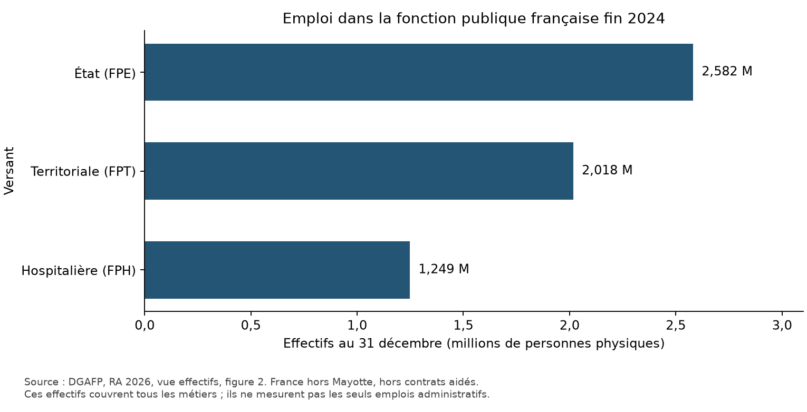
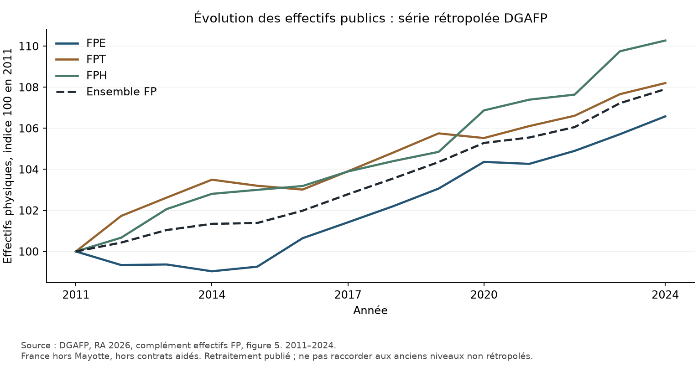

01 — Cartographie de l'emploi public français : stocks, champs et coûts
Date d'arrêt de la recherche : 28 octobre 2026. Version : premier dossier statistique de la reprise Codex. Cette note établit la base française du diagnostic. Elle ne mesure pas encore des sureffectifs ni une économie nationale réalisable. Les flux et retraites font l'objet de la note 01b ; les coûts d'entrée sont traités dans le volet 01c.
1. Synthèse
- [FAIT] La DGAFP dénombre 5 848 291 personnes physiques fin 2024, hors contrats aidés, en France hors Mayotte : 2 581 870 FPE, 2 017 830 FPT, 1 248 591 FPH. Le chiffre de 5,9 millions est un arrondi, pas un nombre d'ETP administratifs. Source : RA 2026, vue effectifs, figure 2 C6:C9 ; rapport, p. imprimée 12, page PDF 13.
- [FAIT] Les contrats aidés ajoutent 25 797 personnes dans cette version, portant l'ensemble à 5 874 088. Source : complément effectifs FP, figure 4 P18/P22 et figure 6 S23.
- [FAIT] L'Insee Première 2094 publie un autre état des données : 5 876 700 personnes contrats aidés compris et 5 850 900 hors contrats aidés, fin 2024. Les fichiers hérités ont été retéléchargés et rapprochés par SHA-256 ; l'écart ne résulte donc pas d'un fichier local altéré. Source : IP2094, figure 1 D9/E9 ; contrôle de provenance.
- [ESTIMATION] La différence de hausse entre +32 800 Insee et +37 036 DGAFP se décompose arithmétiquement en +3 000 liés au passage au champ hors contrats aidés de l'IP2094, puis +1 236 d'écart entre les deux publications sur ce champ. La cause exacte de ce second écart reste [NON TROUVÉ]. Une explication par Mayotte, les militaires ou l'étranger n'est pas démontrée.
- [FAIT] Le volume annuel Insee atteint 5 781 800 EQTP hors contrats aidés et 5 804 200 avec eux, en 2024, sur tout poste actif dans l'année. Ce volume ne doit pas être soustrait des personnes présentes au 31 décembre pour calculer des « postes vacants ». Source : IP2094, figure 1 D14/E14, note 2.
- [FAIT] Les statuts DGAFP se répartissent entre 3 745 836 fonctionnaires, 1 407 727 contractuels, 312 854 militaires et 381 874 autres catégories/statuts. Ces catégories ne classent pas l'utilité ni le caractère administratif des tâches. Source : vue caractéristiques des postes, figure 1 D19:D23.
- [FAIT] Les « autres catégories » comprennent notamment les enseignants du privé sous contrat, des médecins hospitaliers, des ouvriers d'État et des apprentis. Les ajouter comme des emplois nouveaux à l'effectif total de la FP provoquerait un double comptage. Source : même figure, note 1.
- [FAIT] La FPE comprend 2 058 555 agents employés par les ministères et 523 315 par les EPA dans la nomenclature DGAFP. L'emploi des EPA n'est ni le seul emploi des agences, ni un ensemble exclusivement administratif. Source : vue effectifs, figure 4 C36:C37, note sur les EPA du complément FP, figure 5.
- [FAIT] L'ensemble Éducation nationale/Jeunesse/Sports/Enseignement supérieur/Recherche représente 1 501 101 personnes, dont 1 142 548 au ministère et 358 553 dans les EPA rattachés. Ces agents ne sont pas tous enseignants, administratifs ou personnels de direction. Source : figure 4 C6:C8.
- [FAIT] Les organismes communaux emploient 1 146 464 personnes et les organismes intercommunaux 401 402, dans la FPT en 2024. Les deux ensembles interviennent dans des missions comprenant de nombreux services opérationnels. Leur existence ne prouve pas un doublon d'emploi. Source : figure 6 C6/C9.
- [FAIT] La FPH comprend 1 118 560 personnes dans les hôpitaux, 92 510 dans les Ehpad non hospitaliers et 37 521 dans les autres établissements médico-sociaux. Les 973 956 personnels hospitaliers non médicaux incluent des soignants ; ils ne sont pas tous administratifs. Source : figure 7 C6:C11.
- [FAIT] Le tableau DGAFP fondé sur les comptes nationaux dénombre 6 531 025 salariés à titre principal dans les APU fin 2024, contrats aidés compris. Ce périmètre S13 diffère de la FP et comprend des employeurs de droit privé non marchands. Il ne se compare pas directement à un emploi S13 intérieur annuel d'une autre source. Source : complément effectifs FP, figure 2 L28.
- [FAIT] Les organismes publics hors FP comptent 188 011 personnes dans le tableau de périmètre, dont 115 899 non marchandes et 72 112 marchandes. S'y ajoutent des ensembles présentés séparément : 627 947 dans les organismes privés à financement public prédominant, 512 501 dans les entreprises publiques marchandes. Ces champs ne s'ajoutent pas tous au S13. Source : complément FP, figure 3 U16/U19/U20/U25/U28.
- [FAIT] Les organismes privés de protection sociale de ce tableau emploient 162 623 personnes, fin 2024. Il ne faut ni les appeler fonctionnaires, ni les exclure d'une comparaison économique des coûts de gestion publics. Source : figure 3 U22.
- [FAIT] Les rémunérations D1 des APU atteignent 370,012 Md€ courants en 2025, provisoires : 184,8776 APUC, 96,9526 APUL et 88,1818 ASSO. D1 inclut les cotisations sociales employeur, effectives et imputées, et dépasse le seul salaire brut. Source : Insee, comptes nationaux base 2020, tableau dépenses des APU, figure 1 B8:F8.
- [FAIT] Les consommations intermédiaires P2 atteignent 163,4965 Md€ en 2025. Elles comprennent bien davantage que la sous-traitance administrative ou le conseil. Ce montant ne permet pas de dénombrer des consultants. Source : même tableau, F7.
- [FAIT] Le titre 2 exécuté du budget général de l'État atteint 156,241675 Md€ en 2025, dont 49,219294 Md€ à la ligne des contributions d'équilibre au CAS Pensions. Ce périmètre n'est pas la rémunération de toute la FPE, ni le D1 des APUC. Source : complément rémunérations, dépenses, figure 2 T35/T14.
- [ESTIMATION] Retirer cette ligne CAS au titre 2 donne 107,022381 Md€. Ce calcul n'est pas encore un agrégat « hors toute retraite », car d'autres lignes concernent la RAFP, le FSPOEIE ou d'autres cotisations vieillesse. Source : même tableau, T19:T21 ; formule
T35 − T14. - [FAIT] Les salaires bruts mensuels moyens hors contrats aidés sont de 3 738,28 € en FPE, 2 857,75 € en FPT et 3 559,79 € en FPH en 2024, sur le champ de salaire en EQTP mensualisé défini par la source. Ils n'incluent pas les charges employeur et ne sont pas des coûts d'entrée. Source : complément rémunérations, figure 1 B11/B28/B45 et champ A55.
- [FAIT] La durée annuelle effective déclarée des agents à temps complet hors enseignants est de 1 623,116 heures en 2025, contre 1 680,234 pour le privé dans le même tableau. L'écart n'est pas corrigé des professions, sujétions ou absences ; il ne justifie pas une conversion directe en postes supprimables. Source : vue temps de travail, figure 1 F6/G6 et champ B17.
- [FAIT] Dix rapprochements arithmétiques sont satisfaits : sommes par versant, statut et employeur, puis D1 Insee/DGAFP. Dix-neuf XLSX hérités sont identiques à leurs distributions primaires retéléchargées. Ce contrôle de transcription n'est pas une validation indépendante de la méthode SIASP. Sources :
01_controles.csv,01_controle_provenance.csv.
2. Tableau des indicateurs
Tous les nombres de personnes ci-dessous se rapportent aux postes principaux au 31 décembre 2024, France hors Mayotte, hors contrats aidés, sauf mention explicite.
| Indicateur | Valeur | Unité | Année | Champ / définition | Source | Page ou tableau | Statut | Note |
|---|---|---|---|---|---|---|---|---|
| Fonction publique, version DGAFP | 5 848 291 | PP | 2024 | Hors contrats aidés | DGAFP, données effectifs | Vue figure 2 C9 | [FAIT] | Base de travail nationale |
| État | 2 581 870 | PP | 2024 | FPE | DGAFP | C6 | [FAIT] | Inclut militaires et enseignement privé sous contrat |
| Territoriale | 2 017 830 | PP | 2024 | FPT | DGAFP | C7 | [FAIT] | Nombreux métiers opérationnels |
| Hospitalière | 1 248 591 | PP | 2024 | FPH | DGAFP | C8 | [FAIT] | Médecins inclus |
| Fonction publique, version Insee | 5 850 900 | PP | 2024 | Hors contrats aidés | Insee IP2094 | Figure 1 E9 | [FAIT] | Autre version conservée |
| Volume annuel | 5 781 800 | EQTP annuels | 2024 | Tout poste actif, hors contrats aidés | Insee | Figure 1 E14 | [FAIT] | Pas un stock instantané |
| Fonctionnaires | 3 745 836 | PP | 2024 | Trois versants | DGAFP postes | Vue figure 1 D19 | [FAIT] | Militaires FPT regroupés selon note |
| Contractuels | 1 407 727 | PP | 2024 | Trois versants | DGAFP postes | D20 | [FAIT] | Médecins hors catégorie contractuels SIASP |
| Militaires FPE | 312 854 | PP | 2024 | FPE | DGAFP postes | D21 | [FAIT] | Gendarmerie à examiner au chantier 02 |
| Autres catégories | 381 874 | PP | 2024 | Trois versants | DGAFP postes | D22 | [FAIT] | Déjà incluses au total |
| APU, classification nationale | 6 531 025 | PP | 2024 | S13, salariés principaux, contrats aidés inclus | DGAFP effectifs | Complément FP figure 2 L28 | [FAIT] | Pas le champ FP |
| Organismes privés de protection sociale | 162 623 | PP | 2024 | Hors FP, financement public prédominant | DGAFP effectifs | Complément FP figure 3 U22 | [FAIT] | Sous-ensemble des organismes privés |
| Rémunérations des salariés | 370,012 | Md€ courants | 2025 | S13, données provisoires | Insee comptes nationaux | Figure 1 F8 | [FAIT] | Pensions/cotisations à distinguer |
| Consommations intermédiaires | 163,4965 | Md€ courants | 2025 | S13, données provisoires | Insee | Figure 1 F7 | [FAIT] | Pas les seuls prestataires administratifs |
| Titre 2 exécuté | 156,241675 | Md€ courants | 2025 | Budget général État | DGAFP rémunérations | Dépenses figure 2 T35 | [FAIT] | Différent de FPE/S13 |
| Contributions CAS de la ligne dédiée | 49,219294 | Md€ courants | 2025 | Budget général État | DGAFP | T14 | [FAIT] | Financement, pas droits futurs économisés |
| Durée annuelle effective | 1 623,116 | heures | 2025 | Temps complet, hors enseignants | DGAFP temps de travail | Vue figure 1 F6 | [FAIT] | Déclaratif Enquête Emploi |
3. Analyse détaillée
3.1 Ce que mesure le stock de référence
L'unité « personne physique au 31 décembre » correspond à une personne et son poste principal, actif et non annexe. Ce poste est généralement le plus rémunérateur lorsqu'un agent en occupe plusieurs. Le poste principal est déterminé en tenant compte du public et du privé. Une personne cumulant plusieurs employeurs ne doit donc pas être multipliée par le nombre de contrats.
Le volume annuel Insee pondère les postes par durée et quotité sur l'année. Des contrats intégralement terminés avant le 31 décembre contribuent au volume annuel sans figurer dans le stock de fin d'année. Inversement, une personne recrutée en décembre compte dans le stock mais très peu dans le volume annuel. Il n'existe aucune identité personnes − EQTP annuels = emplois à supprimer.
Le taux d'administration civil territorial de la DGAFP emploie encore un autre concept : des ETP localisés au 31 décembre, hors militaires. Il ne doit pas être substitué à l'EQTP annuel. Les champs propres aux rémunérations excluent notamment les militaires, les apprentis, les assistants maternels/familiaux et les internes/externes hospitaliers. Le dénominateur d'un coût doit être celui de son numérateur.
3.2 Rapprochement des versions Insee et DGAFP
| Publication et champ | Fin 2023, PP | Fin 2024, PP | Variation calculée, PP |
|---|---|---|---|
| Insee IP2094, contrats aidés compris | 5 843 900 | 5 876 700 | +32 800 |
| Insee IP2094, hors contrats aidés | 5 815 100 | 5 850 900 | +35 800 |
| DGAFP RA2026, contrats aidés compris | 5 840 039 | 5 874 088 | +34 049 |
| DGAFP RA2026, hors contrats aidés | 5 811 255 | 5 848 291 | +37 036 |
[ESTIMATION] Les variations sont calculées par soustraction des cellules des deux années dans chaque publication. La précision Insee est ici la centaine de personnes. L'écart DGAFP-Insee hors contrats aidés vaut −2 609 personnes fin 2024 et −3 845 fin 2023, donc +1 236 sur la variation. Des différences allant jusqu'à environ 100 personnes dans la somme des versants Insee proviennent de l'arrondi des tableaux ; les totaux publiés sont conservés.
Le rapport DGAFP explicite, p. imprimée 21/page PDF 22, des changements méthodologiques et la révision de 7 400 personnes sur le millésime 2023 par rapport au rapport annuel antérieur. Il cite aussi l'IP2094. Ce passage ne fournit pas un pont chiffré exact entre l'IP2094 et le RA2026. L'IP2094 décrit notamment la meilleure identification des réservistes et la correction des quotités de contrats courts. Ces avertissements motivent de conserver deux versions, pas d'attribuer sans preuve la différence résiduelle à un seul ajustement.
La base nationale retient le RA2026, publication plus récente, pour la structure détaillée. Les comparaisons nécessitant des EQTP annuels utilisent la série Insee identifiée comme telle. Aucun calcul ne rapproche automatiquement le numérateur d'une version au dénominateur d'une autre.
3.3 Évolution longue et transferts entre employeurs
La série DGAFP 2011–2024 utilisée ici est explicitement rétropolée. Le tableau contient des nombres à décimales, issus de ce retraitement, avant retour aux décomptes récents. Ils doivent être arrondis pour la présentation sans être interprétés comme des fractions de personne directement observées. Les 56 observations des trois versants et du total sont dans 01_effectifs_serie_2011_2024.csv.
Les changements de rattachement des AESH des EPA vers les ministères expliquent une part des mouvements opposés des deux catégories d'employeur entre 2022 et 2024. Supprimer un EPA de la nomenclature ou déplacer sa paie vers le ministère ne constitue pas une économie d'emploi. Les futures fiches de réforme devront séparer changement de tutelle, changement d'employeur, transfert et suppression effective de mission ou de poste.


3.4 Les cercles FP, APU, entreprises publiques et sous-traitance
La fonction publique est principalement définie par la nature juridique de l'employeur et le droit de recrutement. Les comptes nationaux classent les APU selon une logique de secteur institutionnel et de production non marchande. Des organismes de droit privé y figurent ; des employeurs publics marchands restent hors S13. Une entreprise détenue par l'État n'est donc pas automatiquement une administration publique.
Le tableau DGAFP des organismes hors FP est une carte des champs, pas une liste d'effectifs à additionner à S13. Il distingue organismes publics non marchands, marchands, organismes privés à financement public prédominant et entreprises publiques. La Sécurité sociale, les hôpitaux privés non lucratifs et les associations financées publiquement ne sont pas des « agents administratifs cachés » par définition : leurs emplois incluent aussi des activités directement opérationnelles.
France Travail doit être identifié une fois dans le champ correspondant à sa catégorie juridique et à son régime de recrutement, puis relié à ses comptes et effectifs propres. L'ajouter forfaitairement à toute la FP sans vérifier son traitement dans les EPA peut le compter deux fois. Même précaution pour les enseignants privés sous contrat, déjà inclus dans la catégorie « autres » de la FPE.
Les salariés de prestataires intervenant pour des administrations ne sont pas dénombrés dans les XLSX comme un ensemble statistique d'ETP. L'agrégat P2 couvre notamment achats de biens, services, énergie, entretien et prestations ; D632 couvre certaines prestations sociales en nature achetées. Un ratio de masse salariale sans ces postes peut avantager artificiellement un pays qui externalise. Convertir tout P2 en « personnels administratifs privés » serait tout aussi erroné. Le chantier international doit comparer la fonction rendue et les deux lectures demandées, personnel propre et coût économique élargi.
3.5 Masse salariale, coût évitable et pensions
Le D1 de 370,012 Md€ se rapporte à 2025 et au S13 France. Le diviser par les 5,848 millions de personnes SIASP de fin 2024 donnerait un ratio combinant années, unités et champs différents. Ce ratio n'est pas utilisé pour valoriser les économies.
Le non-remplacement évite le recrutement d'un entrant contrefactuel. Le coût pertinent dépend du métier, du grade, de la quotité et de la date du recrutement qui aurait été réalisé. Le salaire moyen du partant et le coût moyen D1 ne peuvent s'y substituer. Une catégorie de moins de 30 ans contient aussi des agents déjà anciens et n'est pas un groupe d'entrants. La documentation PAP et les coûts hors CAS doivent être conservés par programme/catégorie avant toute pondération nationale.
La contribution au CAS Pensions finance un régime en répartition déjà chargé de pensions. Une réduction de la contribution d'un employeur ne fait pas disparaître les pensions dues. La lecture employeur peut constater un flux de cotisation moindre, tandis que le besoin de financement consolidé du régime demeure. Les droits futurs non acquis nécessitent un autre modèle actuariel, hors de l'économie annuelle immédiate. Le retrait des 49,219 Md€ du titre 2 n'élimine pas toutes les lignes vieillesse ; les cotisations additionnelles et autres régimes sont identifiées séparément dans le CSV.
La consolidation APU exige également de traiter recettes fiscales et sociales perdues, effets d'un éventuel emploi privé de remplacement, allocations de chômage, achats de remplacement et effet des contrôles sur les recettes. Le moteur peut illustrer une hypothèse statique ou un retour à l'emploi, mais aucun taux de conservation net n'est actuellement présenté comme une observation nationale.
3.6 Temps de travail et départs
Les 1 623 heures effectives moyennes ne sont pas les 1 607 heures de référence légale. Une durée effective issue d'enquête intègre absences, congés, heures supplémentaires et situations individuelles. La comparaison au privé exige des corrections de composition des métiers, d'âge, de sujétions et de santé au travail. La source exclut ici tous les enseignants. Elle ne permet pas de multiplier un écart moyen par l'ensemble des effectifs publics.
La note 01b distingue sorties entre deux 31 décembre, mouvements interversants, postes courts dans l'année et nouvelles pensions. Pour le modèle, le paramètre de départ ne doit pas être une reprise aveugle du taux de toutes les sorties civiles : il faut le documenter dans chaque vivier de métiers, après retrait des mobilités internes et des emplois qui doivent être renouvelés pour assurer le service. Les projections fournies à ce stade sont des tests mécaniques, pas une prévision des départs administratifs 2027–2031.
4. Limites, données manquantes et contradictions
- [NON TROUVÉ] Pont officiel complet Insee–DGAFP expliquant les −2 609 personnes hors contrats aidés fin 2024. La réconciliation arithmétique est disponible ; l'attribution causale ne l'est pas.
- [NON TROUVÉ] Partition nationale exhaustive A/B/C/D par tâches réelles et en ETP : un ministère ou une filière statutaire n'est pas un métier administratif. Le chantier 02 traite cette limite.
- [NON TROUVÉ] Effectif des prestataires privés affectés aux fonctions administratives publiques, par mission et ETP. La totalité de P2 n'est pas un substitut.
- [NON TROUVÉ] Coût d'entrée national administratif par versant, hors pension, pondéré selon les recrutements évités. Les PAP par programme servent de points documentés et non de moyenne nationale automatique.
- [NON TROUVÉ] Projection de sorties définitives 2027–2031 par vivier administratif, exprimée dans l'unité du registre des réformes.
- [NON TROUVÉ] Pont de consolidation entièrement calibré, incluant fiscalité, cotisations, chômage et retour à l'emploi. À distinguer du simple affichage hors CAS.
- [FAIT] L'accès terminal à une page de la Cour des comptes a expiré après 30 secondes ; Insee, DGAFP, Eurostat et le flux de structure OCDE testé ont répondu. Il s'agit d'une limite d'accès ponctuelle, pas de la preuve que toute la Cour ou toute l'API serait indisponible.
- Les tableaux Insee et DGAFP partagent la source SIASP. Leur accord est un contrôle de publication, pas deux mesures statistiques indépendantes. Les contrôles SRE du volet 01b recourent eux aussi aux sources de régime sous-jacentes communes.
5. Sources consultées et reproductibilité
Les URL exactes, dates de consultation et empreintes sont dans sources/registre_01.csv, sources/01_manifest_telechargements.json et data/france/01_manifest_fichiers.csv. Les pages de publication consultées sont :
- DGAFP, rapport annuel 2026, 15 octobre 2026, rapport intégral de 204 pages téléchargé ; pour cette note, lecture ciblée des sections sources/emploi/coûts, sans revendiquer la lecture intégrale de tous les chapitres.
- DGAFP, évolution des effectifs 2024, données XLSX ouvertes et rapprochées de l'archive officielle.
- Insee Première 2094, 10 février 2026, page, méthodes et classeur lus.
- Insee, série par versant et ministère, 10 février 2026, version de publication conservée ; ne pas substituer ses niveaux à ceux de la série rétropolée DGAFP.
- Insee, dépenses des administrations publiques 2025, 28 août 2026, page et classeur lus.
- DGAFP, caractéristiques des postes, rémunérations, temps de travail, pages et tableaux cités consultés.
Exécution depuis la racine : python -I scripts/01_cartographie.py, puis python -I scripts/01_provenance.py. L'extraction ne modifie aucun brut. Les CSV conservent cellule, valeur d'origine, multiplicateur et unité. L'outil scripts/fetch.py rétablit l'archivage des sources ; html2text est utilisé lorsqu'installé, le PDF utilise pdftotext -layout ou un repli pypdf explicitement indiqué. Les PDF lourds restent hors Git dans data/cache/.
01b — Entrées, sorties, retraites et capacité de non-remplacement
Date de consultation : 28 octobre 2026. Publication principale : DGAFP, Rapport annuel sur l'état de la fonction publique, édition 2026, 15 octobre 2026. Les années observées sont 2024 pour les flux et les âges, 2025 pour les pensions. Le millésime 2026 du fichier n'est pas l'année de mesure.
1. Synthèse
Les données établissent un flux important de sorties de la fonction publique civile. Elles ne permettent pas d'identifier, à elles seules, un stock de postes administratifs supprimables. Le chiffre de 2,3 millions est proche de la somme des sorties civiles des cinq dernières années disponibles, mais cette proximité n'établit ni son origine dans le plan politique examiné ni la faisabilité de 800 000 non-remplacements administratifs.
- [FAIT] 481 598 personnes physiques sont sorties de la fonction publique civile entre fin 2023 et fin 2024, contre 517 134 entrées. Source : DGAFP, vue « entrants-sortants », figure 1, cellules H8 et D8 ; PDF p. 54.
- [FAIT] 174 655 sortants sont fonctionnaires, 261 179 contractuels et 45 764 d'autres catégories/statuts en 2024. Source : même figure, H22, H26 et H30.
- [ESTIMATION] 54,23 % des sortants civils sont contractuels :
261179 / 481598. Leur rotation est donc décisive dans toute extrapolation de l'ensemble des sorties. Cela ne signifie pas que tous leurs départs sont des fins de CDD. - [FAIT] 169 983 sorties en FPE, 201 530 en FPT, 110 085 en FPH en 2024, tous métiers civils. Source : figure 2, H9, H14, H19 ; PDF p. 55.
- [ESTIMATION] 31 942 mouvements interversants sont obtenus en sommant les valeurs publiées en 2024. Ils s'annulent à l'échelle des trois versants et ne réduisent pas l'emploi national. Source : encadré 1, somme H11/H16/H21, identique à la somme J11/J16/J21 ; PDF p. 60.
- [FAIT] 332 144 postes ont commencé et fini au cours de 2024 ; 307 069 sont contractuels dans la figure 4. Ce sont des postes occupés pendant l'année, distincts du concept de personne sortante entre deux 31 décembre. Source : figure 4, C5 et C10 ; PDF p. 58.
- [ESTIMATION] 2 339 789 occurrences annuelles de sortie sont observées sur 2020-2024 :
419200 + 473797 + 497069 + 468125 + 481598. Source : complément « entrées-sorties », figure 2, K5/M5/O5/Q5/S5. Une personne sortie puis revenue peut être comptée à nouveau une autre année. - [HYPOTHÈSE] Répéter cinq fois le seul flux 2024 donne 2 407 990 sorties, tous métiers civils, sans réduction du dénominateur. Ce n'est pas une projection officielle de 2027-2031.
- [FAIT] 144 033 nouvelles pensions de droit direct sont attribuées en 2025 dans le périmètre de la vue DGAFP, dont 133 342 hors militaires. Source : vue « retraites », figure 1, E17/E16 ; PDF p. 78.
- [ESTIMATION] 108 796 pensions concernent les fonctionnaires civils des trois versants suivis par SRE/CNRACL : somme de trois valeurs publiées [FAIT], 39 146 FPE, 46 897 FPT, 22 753 FPH. Source : figure 1, E5/E10/E13. Formule :
39146 + 46897 + 22753, sans les autres statuts. - [FAIT] 19 187 nouveaux pensionnés sont contractuels, encore employés dans la FP moins d'un an avant liquidation. Source : encadré 4, C9. Les autres pensions Ircantec sont dans une catégorie distincte et ne doivent pas être toutes attribuées aux contractuels.
- [HYPOTHÈSE] Cinq années au niveau de pensions 2025 donnent 720 165 pensions, militaires inclus, ou 666 710 hors militaires. Le remplacement intégral de ces pensions par des postes évitables serait déjà une hypothèse excessive pour les métiers protégés.
- [ESTIMATION] 800 000 représentent 120,0 % des 666 710 pensions civiles de ce test. La retraite civile seule, à flux 2025 constant sur cinq ans, ne suffit donc pas. Cette conclusion est conditionnelle au flux constant et ne borne pas toutes les autres sorties futures.
- [FAIT] 2 215 506 agents ont 50 ans ou plus fin 2024, dont 1 695 233 fonctionnaires. Source : dossier « 50 ans ou plus », figures 1 et 4, C9. Ce stock ne signifie pas que tous partiront avant 2031.
- [FAIT] 379 024 fonctionnaires ont 60 ans ou plus fin 2024. Source : même dossier, figure 7, C9. Il faut une projection par génération et droits pour passer de cet âge à un départ.
- [ESTIMATION] Un test à taux de sortie constant et sans aucun recrutement produit 2 018 805 sorties civiles sur cinq ans, contre 2 407 990 avec le flux constant. Le stock décroissant change donc matériellement la mécanique. Cette simulation ne maintient pas la capacité de service.
- [FAIT et ESTIMATION] La publication primaire SRE de juillet 2026 retrouve les chiffres FPT/FPH/militaires. Son total FPE civile plus large se réconcilie exactement :
47104 − 5623 (La Poste) − 2335 (Orange) = 39146. Les sources administratives sous-jacentes restent communes. - [FAIT] Un écart de 65 postes contractuels courts subsiste entre deux figures du fichier DGAFP : 307 134 en figure 5 contre 307 069 en figure 4. Les données brutes sont conservées et cet écart n'est pas transformé en ajustement des sorties.
2. Tableau des indicateurs
Les URL F, R, A et S sont développées et cliquables dans la bibliographie, section 6. Les valeurs issues des classeurs conservent la précision disponible ; elle ne constitue pas une mesure de précision statistique.
| Indicateur | Valeur | Unité | Année | Champ / définition | Source (URL) | Page/tableau | Statut | Note |
|---|---|---|---|---|---|---|---|---|
| Entrants dans la FP civile | 517 134 | personnes physiques | 2024 | Présents fin 2024, absents fin 2023 | F | Fig. 1 D8 ; PDF p. 54 | [FAIT] | Hors militaires et contrats aidés |
| Sortants de la FP civile | 481 598 | personnes physiques | 2024 | Présents fin 2023, absents fin 2024 | F | Fig. 1 H8 ; PDF p. 54 | [FAIT] | Pas de preuve de sortie définitive |
| Sortants fonctionnaires | 174 655 | personnes physiques | 2024 | Statut au départ ; tous métiers civils | F | Fig. 1 H22 | [FAIT] | Ne pas assimiler à retraites |
| Sortants contractuels | 261 179 | personnes physiques | 2024 | Statut au départ ; tous métiers civils | F | Fig. 1 H26 | [FAIT] | Motif individuel non fourni |
| Sortants autres statuts | 45 764 | personnes physiques | 2024 | Tous métiers civils | F | Fig. 1 H30 | [FAIT] | Enseignants privés, médecins, etc. selon versant |
| Sortants FPE | 169 983 | personnes physiques | 2024 | Sortie de toute la FP civile | F | Fig. 2 H9 | [FAIT] | Hors mouvements interversants |
| Sortants FPT | 201 530 | personnes physiques | 2024 | Idem | F | Fig. 2 H14 | [FAIT] | Idem |
| Sortants FPH | 110 085 | personnes physiques | 2024 | Idem | F | Fig. 2 H19 | [FAIT] | Idem |
| Sorties vers le salariat privé | 102 180 | personnes physiques | 2024 | Emplois principaux, source BTS | F | Compléments Fig. 7 D18 | [FAIT] | Incluses dans les sorties, à ne pas ajouter |
| Changements de versant | 31 942 | personnes physiques | 2024 | Mobilités internes à la FP | F | Encadré 1, colonnes H/J | [ESTIMATION] | Somme des trois destinations/origines |
| Postes commencés et finis dans l'année | 332 144 | postes occupés | 2024 | Civils, non annexes, filtre rémunération | F | Fig. 4 C5 | [FAIT] | Ne pas assimiler aux personnes physiques |
| Sorties civiles 2020-2024 cumulées | 2 339 789 | occurrences annuelles | 2020-2024 | Somme des flux annuels observés | F | Compléments Fig. 2 | [ESTIMATION] | Ni personnes uniques ni postes supprimables |
| Nouvelles pensions, ensemble DGAFP | 144 033 | pensions | 2025 | Droit direct, SRE hors Poste/Orange | R | Fig. 1 E17 ; PDF p. 78 | [FAIT] | Ircantec sous condition d'activité récente |
| Nouvelles pensions hors militaires | 133 342 | pensions | 2025 | Idem hors militaires | R | Fig. 1 E16 | [FAIT] | Pas un nombre d'ETP |
| Pensions fonctionnaires FPE civiles | 39 146 | pensions | 2025 | SRE hors Poste/Orange | R | Fig. 1 E5 | [FAIT] | Contrôle complément F1 D6 |
| Pensions fonctionnaires FPT | 46 897 | pensions | 2025 | CNRACL | R, S | Fig. 1 E10 ; SRE motif de départ | [FAIT] | Hors fonctionnaires relevant de l'Ircantec |
| Pensions fonctionnaires FPH | 22 753 | pensions | 2025 | CNRACL | R, S | Fig. 1 E13 ; SRE motif de départ | [FAIT] | Idem |
| Pensions contractuels | 19 187 | pensions | 2025 | Fonction publique moins d'un an avant liquidation | R | Encadré 4 C9 | [FAIT] | Ne pas ajouter une seconde fois à l'ensemble |
| Agents de 50 ans ou plus | 2 215 506 | personnes physiques | 2024 | Tous statuts, hors contrats aidés, France hors Mayotte | A | Fig. 1 C9 | [FAIT] | Stock d'âge |
| Fonctionnaires de 60 ans ou plus | 379 024 | personnes physiques | 2024 | Emplois principaux au 31/12 | A | Fig. 7 C9 | [FAIT] | Pas une projection de liquidation |
3. Analyse détaillée
3.1 Ce que mesure une sortie
Dans Siasp, une sortie correspond à la comparaison de deux photographies : une personne en emploi public civil principal au 31 décembre de N−1 n'y est plus au 31 décembre N. Les mobilités entre les trois versants et les changements de statut ne sont pas comptés comme sorties de l'ensemble de la FP civile. Le champ inclut les métiers de terrain et de soutien autant que la gestion administrative.
Un agent peut quitter le champ à la suite d'une retraite, d'une fin de contrat, d'une démission, d'un décès ou d'une interruption d'activité. Les tableaux extraits n'identifient pas le motif individuel de chacun des 481 598 sortants. Ils ne prouvent pas qu'une personne sera absente définitivement, ni que le poste qu'elle occupait restera vacant. La forte part des contractuels rend particulièrement fragile l'assimilation d'un flux total de sorties à un flux de vacances administratives pérennes.
Les postes commencés et finis pendant une même année sont un autre concept. Leur nombre dépend aussi du périmètre des postes non annexes et d'un filtre de rémunération introduit avec la DSN. Ces 332 144 postes ne sont ni des ETP annuels, ni une quantité à ajouter automatiquement aux sorties de fin d'année. Une personne peut avoir plusieurs postes. Aucune déduplication nationale des individus sur cinq ans n'est disponible dans les tableaux agrégés.
3.2 Comment interpréter les 2,3 millions
Trois calculs doivent être séparés :
- Observation historique : somme 2020-2024 = 2 339 789 occurrences. Cette somme donne un ordre de grandeur de rotation, avec des ruptures de méthode liées à la DSN. Elle ne décrit pas une cohorte unique.
- Extrapolation à flux constant :
5 × 481598 = 2407990. Elle suppose que les flux restent constants malgré la baisse éventuelle du stock. Elle ne constitue pas une prévision et ne distingue pas les fonctions réformables. - Extrapolation à taux constant et stock décroissant : voir section suivante. Elle tient compte mécaniquement de la contraction du dénominateur, mais conserve des hypothèses très fortes sur les comportements et le service.
La proximité du premier calcul avec 2,3 millions constitue une piste de vérification du plan existant. [NON TROUVÉ] Aucun document de calcul de son auteur n'a été lu ici qui attribue explicitement son chiffre à cette somme. Il serait donc abusif d'en présenter la provenance comme établie.
Sous le benchmark historique, 800 000 représenteraient 34,19 % de toutes les occurrences de sortie civile. Ce ratio ne dit pas combien se situent dans la catégorie fonctionnelle C, combien sont de véritables vacances durables, ni combien peuvent être absorbées à service équivalent. La nomenclature de métiers et les viviers non chevauchants doivent précéder tout chiffrage financier.
3.3 Deux mécaniques pour 2027-2031, sans prévision inventée
Le fichier 01b_projection_2027_2031.csv applique, pour chaque versant civil v :
N_v,2027 = stock_v,fin2024 [HYPOTHÈSE] ;
d_v = sorties_v,2024 / stock_v,fin2024 [ESTIMATION] ;
sorties_v,t = d_v × N_v,t et N_v,t+1 = N_v,t − sorties_v,t [HYPOTHÈSE : aucun recrutement].
Le paramètre d_v diffère du taux de sortie publié par la DGAFP, dont le dénominateur est la moyenne des stocks fin 2023 et fin 2024. Il n'est pas renommé « taux DGAFP ». Aucun calcul caché ne rapproche les effectifs 2024 d'un stock supposé connu en 2027.
| Versant civil | Stock initial supposé | Sorties annuelles 2024 | Taux flux/stock final appliqué | Sorties sur cinq ans, stock décroissant |
|---|---|---|---|---|
| FPE | 2 269 016 PP | 169 983 PP | 7,4915 % | 731 760 PP |
| FPT | 2 017 830 PP | 201 530 PP | 9,9875 % | 825 491 PP |
| FPH | 1 248 591 PP | 110 085 PP | 8,8167 % | 461 553 PP |
| Total | 5 535 437 PP | 481 598 PP | Taux distincts par versant | 2 018 805 PP |
Statut de tout ce tableau : [HYPOTHÈSE], sauf les stocks et flux observés servant d'entrées. Les résultats affichés sont arrondis indépendamment. Le total utilise les calculs non arrondis. Le test supprime des recrutements dans les trois versants entiers et n'est donc pas un scénario à qualité de service comparable. Il sert seulement à contrôler l'erreur d'un dénominateur constant. Un véritable modèle doit appliquer des taux spécifiques aux viviers métier/employeur et déduire les postes indispensables à remplacer.
3.4 Retraites : un flux bien inférieur, un périmètre à harmoniser
Les pensions de droit direct sont des droits servis, distincts des postes vacants. Le champ SRE de la DGAFP exclut La Poste et Orange ; l'Ircantec ne retient ici que les agents encore en poste dans la FP moins d'un an avant liquidation. Le champ CNRACL ne couvre pas les fonctionnaires territoriaux à moins de 28 heures, qui peuvent relever de l'Ircantec. Ni les pensions de réversion ni le stock total de retraités ne doivent être utilisés pour le non-remplacement.
Le contrôle SRE montre l'importance des périmètres : le total FPE civile de 47 104 inclut 5 623 pensions La Poste et 2 335 Orange. L'exclusion reproduit exactement les 39 146 DGAFP. Les 46 897 FPT, 22 753 FPH et 10 691 militaires concordent. Il s'agit d'une publication primaire distincte, mais ses données administratives alimentent aussi la DGAFP : ce rapprochement ne garantit pas l'indépendance des erreurs initiales.
Le passage à cinq années au niveau 2025 donne 720 165 pensions avec militaires et 666 710 civiles. Ces nombres ne sont pas une estimation actuarielle : la taille des générations, le calendrier légal, les reports de liquidation, les droits acquis et le cumul emploi-retraite ne sont pas modélisés. Un stock d'agents de 50 ans ou plus ne permet pas de faire l'économie de cette projection.
3.5 Portée des seuils demandés
Le fichier 01b_tests_seuils_departs.csv teste les seuils de 500 000, 800 000, un million, 1,5 million et 2,3 millions contre six bases. Les ratios portent sur des PP ou des pensions, explicitement identifiés, et ne doivent pas être réutilisés comme seuils d'ETP budgétaires.
| Seuil de postes administratifs | Apport de l'audit des seuls départs | Qualification à ce stade |
|---|---|---|
| 500 000 | Sous le volume de pensions civiles du test constant, mais ventilation métier, quotités et service inconnus | Non démontré |
| 800 000 | Au-dessus des pensions civiles du test constant ; possible volume brut seulement en mobilisant d'autres sorties ou une autre trajectoire | Non démontré |
| 1 000 000 | Dépasse aussi cinq fois les sorties de fonctionnaires civils 2024 (873 275), mais toutes les sorties civiles incluent beaucoup de contractuels | Non démontré |
| 1 500 000 | Aucun lien établi entre cette fraction de toutes les sorties et une réduction administrative soutenable | Non démontré |
« Non démontré » ne signifie pas « impossible ». L'insuffisance des retraites dans un test constant ne prouve pas une incompatibilité de toutes les réformes structurelles. Inversement, un ratio inférieur à 100 % d'un flux brut ne suffit pas pour reclasser le seuil comme conditionnel ou étayé.
4. Limites, contradictions et données manquantes
- [NON TROUVÉ] Départs administratifs définitifs par vivier : les fichiers locaux donnent les versants/statuts, des âges et des caisses, mais pas le croisement métier précis × motif définitif × quotité de travail × année 2027-2031.
- [NON TROUVÉ] Décomposition de tous les 481 598 sortants par motif. Le nombre de contractuels ne peut pas être renommé « fins de contrat » sans données supplémentaires.
- [NON TROUVÉ] Origine documentaire des 2,3 millions du plan : seule une proximité arithmétique avec les flux historiques est établie ici. Le livre n'a pas été lu.
- Écart interne de 65 postes courts : figure 4 C10 = 307 069 ; figure 5 K6 = 307 134. Le complément « entrées-sorties », figure 3 J9, reprend 307 069. Aucune cause de l'écart n'est établie. L'extraction des postes courts retient la figure de décomposition et conserve l'écart dans
01b_controles.json. - Stocks et flux ne se bouclent pas exactement. Sur les lignes ensemble,
stock2024 − (stock2023 + entréesExternes − sortiesExternes + entréesInterversants − sortiesInterversants)vaut −257 FPE, −885 FPT, +740 FPH, soit −402 au total. La DGAFP précise, dans la note de l'encadré 1, que certains agents ne sont pas suivis d'une année sur l'autre. Les écarts ne sont pas corrigés artificiellement. - Les données 2023 sont révisées et la bascule DSN implique des ruptures de méthode. Comparer des séries longues nécessite une lecture des avertissements, en particulier pour les postes courts et les cohortes de contractuels.
- Les deux publications DGAFP et SRE partagent en partie les mêmes sources : les rapprochements sont des contrôles de transcription/périmètre, pas une réplication statistique indépendante.
- Les champs « FP civile » et « ensemble des pensions » diffèrent. Additionner les pensions 2025 aux sorties 2024 créerait un double comptage conceptuel et mélangerait les années.
- Aucun coût par poste, aucune économie et aucun niveau de service n'est déduit de ces seuls flux. Les agents sans remplacement doivent être identifiés dans les viviers retenus pour chaque réforme.
5. Fichiers et reproduction
python -I scripts/fetch.py 'https://retraitesdeletat.gouv.fr/statistiques/page-3fp.html' sre_2025_trois_fonctions_publiques --out-dir data/cache/01b
python -I scripts/01b_flux_retraites.py
Le premier appel archive la page SRE et son manifeste HTTP/empreinte dans le cache. Le second n'accède pas au réseau : il exploite les XLSX existants et, si présent, le cache SRE. Sans ce cache, les extractions DGAFP restent exécutables mais le contrôle SRE doit être reproduit par le premier appel. Les noms et positions des tables SRE sont contrôlés avant extraction. Les classeurs bruts ne sont jamais modifiés.
Sorties : 01b_flux_annuels.csv, 01b_flux_2024_versant_statut.csv, 01b_mobilites_2024.csv, 01b_retraites_annuelles.csv, 01b_retraites_2025.csv, 01b_ages_2024.csv, 01b_projection_2027_2031.csv, 01b_tests_seuils_departs.csv, 01b_sre_controle_pensions.csv, 01b_controles.json, dans data/france/. Dictionnaire : data/france/01b_DICTIONNAIRE.md. Registre : sources/registre_01b.csv.
Les contrôles exécutés vérifient les totaux de sorties par versant et par statut, les six séries de pensions face au total de la figure 1, cinq croisements de pensions entre vue et compléments, le bouclage des mouvements interversants et la réconciliation FPE DGAFP/SRE. Les écarts documentés restent visibles.
6. Sources consultées
- F DGAFP-SDessi, « Les personnels de la fonction publique civile : entrants et sortants en 2024 », 15/10/2026 : fiche, PDF, pp. 53-63, archive des données XLSX. Vue et compléments locaux lus. Source statistique : Insee/Siasp ; transitions privé/public : BTS/Insee.
- R DGAFP-SDessi, « Les départs à la retraite dans la fonction publique en 2025 », 15/10/2026 : fiche, PDF, pp. 77-95, archive des données XLSX. Vue et complément flux locaux lus. Sources administratives : DGFiP-SRE, CNRACL, FSPOEIE, Ircantec.
- A DGAFP-SDessi, « Les agents de 50 ans ou plus dans la fonction publique en 2024 », édition 2026 : fiche primaire. Classeur local
ra_2026_50plus.xlsx, figures 1, 3, 4 et 7 lues. Source statistique : Insee/Siasp. - S DGFiP/SRE/BFIS, « Les pensions de retraite dans les trois fonctions publiques », en-tête juillet 2026. Tableaux « Effectif des nouvelles pensions de droit direct par versant, motif de départ et catégories statutaires » et « par versant et domaine administratif ». Page archivée intégralement le 28/10/2026. Sources SRE/CNRACL. La réponse HTTP indique une dernière modification le 21/10/2026 ; il ne s'agit pas d'une date de publication déduite.
Chantier 01c — Coût du recrutement évité, pensions et dépenses de conseil
Consultation : 28 octobre 2026. Les PAP ci-dessous sont des prévisions pour 2026 annexées au PLF, pas une exécution 2026. Leur publication remonte à octobre 2025. Les taux de retraite sont ceux publiés et applicables ou annoncés à la date de consultation.
1. Synthèse
- [FAIT] Le PAP 2026 du programme 156 publie des coûts moyens d'entrée chargés hors CAS Pensions de 126 525 € en A+, 55 611 € en A, 38 455 € en B et 34 425 € en C. Ce programme finance la DGFiP, et non l'ensemble de la fonction publique. PAP mission Gestion des finances publiques, p. 50.
- [FAIT] Les coûts moyens de sortie correspondants sont 133 322 €, 67 861 €, 47 180 € et 37 416 €. Le recrutement évité ne doit pas être valorisé au coût du sortant quand la référence prévoit son remplacement. Même source et page.
- [FAIT] Pour le programme 218, les coûts moyens d'entrée sont 109 044 €, 61 076 €, 44 531 € et 43 308 €, respectivement en A+, A, B et C. Les sorties correspondantes coûtent 115 132 €, 63 401 €, 46 836 € et 31 077 €. PAP 218, p. imprimée 25, PDF 24.
- [FAIT] Le PAP 218 précise que ces montants sont annuels, charges patronales incluses hors contribution au CAS et hors prestations sociales. Le coût des seules rémunérations d'activité figure dans trois autres colonnes. Même page.
- [ESTIMATION] Pour la catégorie C du programme 218, l'écart sortie moins entrée est −12 231 €. L'entrée n'est donc pas toujours moins chère que la sortie dans une catégorie : la composition des flux compte. Formule : 31 077 − 43 308.
- [FAIT] Le PAP 156 prévoit un GVT positif de 72,85 M€, négatif de −51,41 M€, soit un solde de 21,44 M€. Ce sont des effets agrégés HCAS, et non un taux individuel réel utilisable tel quel pour une cohorte d'entrants. PAP mission, pp. 49-50.
- [FAIT] Le GVT du programme 218 est +5,65 − 1,64 = +4,01 M€. PAP 218, p. imprimée 24, PDF 23.
- [FAIT] En 2026, la contribution employeur civile au régime de l'État est de 82,28 % ; l'ATI s'ajoute à 0,32 % dans les cas où elle est due. Le total de 82,60 % rencontré dans les PAP ne contredit donc pas le taux de pension de 82,28 %. Service des retraites de l'État, taux et assiettes.
- [FAIT] La contribution employeur CNRACL est 37,65 % en 2026 ; la retenue salariale est 11,10 %, sur une assiette spécifique. Ces taux ne s'appliquent pas au coût employeur complet ni automatiquement à toutes les primes. CNRACL, tableau 2026 et assiette.
- [FAIT] La CNRACL rappelle une trajectoire portant le taux employeur à 43,65 % en 2028, selon la réglementation qu'elle cite. Cette trajectoire doit être distinguée d'une hypothèse de taux constant. CNRACL, publication du 19 décembre 2025.
- [FAIT] Le CAS Pensions est un compte de l'État dont la contribution employeur joue un rôle d'équilibrage. La CNRACL est une caisse dotée de la personnalité morale, gérée par la Caisse des dépôts. Leur fonctionnement institutionnel ne doit pas être confondu. Jaune pensions 2027, pp. 20 et 55.
- [FAIT] Les comptes nationaux ne reprennent pas mécaniquement le taux budgétaire de contribution de l'État au CAS : ils recourent à des cotisations imputées. Une modification de présentation budgétaire ne constitue pas une économie de dépenses publiques. Jaune pensions 2027, p. 24, note 29.
- [ESTIMATION — identité de consolidation] Une cotisation CNRACL évitée améliore le budget de l'employeur à taux fixé et diminue simultanément les recettes de la caisse. Elle ne réduit pas d'autant les pensions déjà liquidées ni le besoin de financement APU. Il faut montrer les deux écritures.
- [FAIT] Le jaune conseil 2027 recense 59 901 488 € d'AE en 2025, contre 96 115 562 € en 2024, sur huit groupes d'achat de conseil en stratégie et organisation. Il ne mesure ni l'ensemble des prestataires ni leur nombre d'ETP. Jaune conseil 2027, pp. 4 et 15.
- [NON TROUVÉ] Un coût national des recrutements évités, ventilé par métier, statut et versant et retraité de toutes les pensions, n'est pas établi par les documents consultés. Les moyennes D1 ou les salaires des moins de trente ans ne remplacent pas ce paramètre.
- [NON TROUVÉ] Aucun coefficient national de conversion d'une économie employeur en économie consolidée n'est validé ici. Il dépend des prélèvements, prestations de transition et possibilités de retour à l'emploi.
2. Tableau des indicateurs
Montants en euros annuels par ETP. La colonne « entrée / sortie » présente deux coûts distincts, pas une fourchette. Le CSV associé conserve séparément les six colonnes de coût des tableaux originaux.
| Indicateur | Valeur entrée / sortie | Unité | Année | Champ / définition | Source | Page/tableau | Statut | Note |
|---|---|---|---|---|---|---|---|---|
| Coûts chargés HCAS A+, P156 | 126 525 / 133 322 | €/ETP/an | 2026 | Flux prévisionnels DGFiP | PAP mission | p. 50 | [FAIT] | Hors CAS, pas coût national |
| Coûts chargés HCAS A, P156 | 55 611 / 67 861 | €/ETP/an | 2026 | Idem | Même source | p. 50 | [FAIT] | Idem |
| Coûts chargés HCAS B, P156 | 38 455 / 47 180 | €/ETP/an | 2026 | Idem | Même source | p. 50 | [FAIT] | Idem |
| Coûts chargés HCAS C, P156 | 34 425 / 37 416 | €/ETP/an | 2026 | Idem | Même source | p. 50 | [FAIT] | Idem |
| Coûts chargés HCAS A+, P218 | 109 044 / 115 132 | €/ETP/an | 2026 | Pilotage et soutien des ministères économiques et financiers | PAP 218 | imprimée 25, PDF 24 | [FAIT] | Hors CAS et prestations sociales |
| Coûts chargés HCAS A, P218 | 61 076 / 63 401 | €/ETP/an | 2026 | Idem | Même source | imprimée 25, PDF 24 | [FAIT] | Idem |
| Coûts chargés HCAS B, P218 | 44 531 / 46 836 | €/ETP/an | 2026 | Idem | Même source | imprimée 25, PDF 24 | [FAIT] | Idem |
| Coûts chargés HCAS C, P218 | 43 308 / 31 077 | €/ETP/an | 2026 | Idem | Même source | imprimée 25, PDF 24 | [FAIT] | Entrée supérieure à sortie |
3. Analyse détaillée
3.1 Le coût marginal et la noria ne s'additionnent pas
[ESTIMATION — identité de référence] Pour un poste dont le titulaire part,
la référence avec remplacement passe du coût du sortant S au coût de l'entrant
E. Sa masse salariale bénéficie déjà de S − E. La trajectoire sans remplacement
évite le coût E par rapport à cette référence. Compter S comme économie
supplémentaire et ajouter encore la noria sur ce poste compterait deux fois une
partie du changement. Par rapport à une photographie figée antérieure au départ,
le changement apparent peut être S, mais cette comparaison répond à une autre
question. Les deux références doivent être annoncées.
[FAIT] Le PAP 156 explique que les variations des coûts d'entrée et sortie reflètent notamment les changements de composition des flux, dont les statuts des personnes recrutées (p. 51). Ses entrées prévues en 2026 sont de 5 200 ETP, dont 3 700 primo-recrutements ; le tableau distingue bien ces deux grandeurs (p. 45). Le coût moyen d'entrée ne se réduit donc pas au traitement d'un jeune débutant. Il peut lui-même devoir être recalibré si la réforme évite un autre profil de recrutement. PAP mission, pp. 45 et 51.
[FAIT] Les commentaires du PAP 156 présentent le GVT positif comme un effet
de carrière de 1,54 % de la masse salariale et le négatif comme une économie de
noria de 1,09 % (p. 50). Leurs dénominateurs sont agrégés. Ces pourcentages ne
constituent pas directement un GVT réel individuel : il faudrait isoler l'effet
des cohortes, promotions, prix et changements de structure. [NON TROUVÉ] Le
paramètre national gvt_individuel_reel du moteur reste à calibrer.
3.2 HCAS n'est pas « hors toutes pensions »
[FAIT] Les PAP isolent une contribution au CAS dans leur décomposition du titre 2. Ils présentent aussi d'autres cotisations. Les contractuels relèvent notamment du régime général et de l'Ircantec, tandis que la RAFP obéit à une assiette propre pour les agents concernés. Les affiliations sont détaillées dans le jaune pensions 2027, pp. 26 et 39.
[ESTIMATION — conséquence comptable] Retirer le CAS ne retire donc pas
automatiquement les cotisations retraite de tous les statuts. Inversement, une
ligne CAS peut comprendre une composante ATI liée à l'invalidité. Les coûts HCAS
publiés ne doivent pas être injectés sans rapprochement dans un paramètre appelé
cout_entree_hors_pension qui prétendrait exclure toutes les pensions. Il faut
documenter les composantes incluses, les statuts et l'assiette des contributions.
3.3 Trois périmètres à publier pour l'employeur et les APU
Budget complet de l'employeur, à taux fixés. Un recrutement non effectué évite les dépenses de rémunération et les cotisations qui auraient été dues sur ce recrutement. Pour une collectivité ou un hôpital, la contribution CNRACL évitée est bien une économie dans son budget individuel. Pour un ministère ou un opérateur, les versements au CAS doivent également être isolés. Dire sans précision que « la contribution ne disparaît pas » est trop catégorique à ce niveau : le versement lié à la rémunération non versée cesse, tandis que le besoin de financement des pensions déjà liquidées demeure ailleurs.
Budget normalisé hors retraite. Il est utile pour comparer les coûts de production courants et constitue la convention de base du moteur. Il doit être nommé ainsi : il ne représente pas la totalité des décaissements évités dans le budget propre de chaque employeur. Les hypothèses « hors CAS » et « hors toutes pensions » doivent être distinguées.
Solde consolidé APU. La baisse d'une cotisation versée d'une administration à un régime public a pour contrepartie une perte de recette de ce régime. Avec des pensions inchangées à court terme, le seul changement de cette écriture interne n'apporte pas la même amélioration du solde national. Le CAS relève de l'équilibre budgétaire de l'État ; la CNRACL possède ses propres comptes, cotisants, engagements et besoins de trésorerie. On doit présenter le déplacement du financement et les éventuelles compensations, sans leur supposer une règle identique. Jaune pensions 2027, pp. 20 et 55-57.
[ESTIMATION — formulation statique] En partant d'un coût employeur complet, on retranche les recettes publiques perdues : cotisations patronales reçues ailleurs dans les APU, cotisations salariales, CSG et impôt sur le revenu qui auraient été perçus sur le recrutement évité. On retranche aussi les prestations de transition supplémentaires et coûts de réorganisation. Les prélèvements récupérés sur un éventuel nouvel emploi s'ajoutent dans une variante explicitement distincte. Chaque recette doit être retirée une seule fois : si les contributions employeur retraite ont déjà été exclues de la base de coût, elles ne doivent pas être déduites à nouveau. [NON TROUVÉ] Aucune valeur nationale forfaitaire de ce taux de conservation n'est défendable à partir des seuls PAP consultés.
3.4 La comptabilité nationale doit rester distincte du titre 2
[FAIT] La note 29 du jaune pensions 2027 (p. 24) précise que la détermination des cotisations imputées en comptabilité nationale est indépendante du taux budgétaire au CAS. D1 contient des conventions de comptes nationaux : ce n'est ni un coût marginal d'entrée ni un montant intégralement évitable poste par poste. La simple division D1/agents mélange aussi les champs et peut mélanger des personnes physiques avec des ETP. Les secteurs et sous-secteurs sont définis par l'Insee, documentation S13.
[FAIT] La fiche IGAS sur la CNRACL relie la dégradation des ressources à la diminution de la base cotisante, notamment au recours aux contractuels qui cotisent à d'autres régimes. Cela confirme la nécessité de suivre les comptes de destination lors d'une réorganisation, plutôt que d'additionner seulement les économies du budget d'origine. La fiche a été lue ; le PDF de cette mission n'a pas été utilisé comme preuve dans cette note. IGAS-IGF-IGA, fiche de septembre 2024, mise à jour décembre 2025.
[HYPOTHÈSE À CALIBRER] Les droits à pension qui ne seront pas acquis par un entrant absent peuvent diminuer des pensions futures. Leur calendrier dépend de l'âge et de la carrière de l'entrant contrefactuel. On ne peut imposer à tous les recrutements un délai de plus de vingt-cinq ans sans leur distribution d'âges ; les flux d'entrée ne comprennent pas uniquement des primo-recrutements jeunes. Aucune économie de droits futurs n'est ajoutée dans le présent chiffrage.
3.5 Conseil et autres prestataires : complément distinct
[FAIT] Le jaune conseil 2027 couvre huit groupes de marchandises et les exercices 2024-2025. Il exclut notamment les prestations réalisées par des personnes publiques et certains contrôles obligatoires ; sa fiabilité dépend du classement comptable des achats dans Chorus (p. 4). Il ne couvre pas l'ensemble des achats informatiques, de maintenance, de restauration ou d'autres services. Le qualifier de dépense totale d'externalisation sous-estimerait donc le périmètre.
[ESTIMATION] Les AE de ce champ diminuent de 37,68 % entre 2024 et 2025,
et de 77,94 % entre 2021 et 2025. Formules : (59 901 488 / 96 115 562 − 1) × 100
et (59 901 488 / 271 486 738 − 1) × 100. Les AE sont des engagements nets,
annulations comprises ; les années de paiement et la durée des contrats peuvent
différer. Cette baisse ne doit pas être assimilée à une économie annuelle nette
de même montant ni convertie en emplois publics sans volumes et prix de prestations.
Jaune conseil 2027, p. 15.
4. Limites, recherches infructueuses et contradictions
- PAP 2027 des programmes 156/218 : [NON TROUVÉ] dans les accès consultés. L'index de l'Assemblée affiche la mission 2027 sans hyperlien lors de la capture. Les index budget 2026/2027 répondent HTTP 200 mais ne contiennent qu'un défi Incapsula de 212 octets. Ce n'est pas une preuve d'absence de publication. Les recherches ciblées « PAP 2027 Gestion des finances », « PAP2027 156 budget » et « PAP2027 218 budget » n'ont pas fourni de tableau 2027 accessible. Les chiffres retenus restent ceux des PAP 2026, sans les renommer 2027.
- Texte Légifrance CNRACL : inaccessible par requête directe (403). Le taux 2026 et le terme 2028 proviennent des pages de la caisse effectivement lues. Le taux intermédiaire 2027 vu dans un extrait de recherche n'est pas repris comme fait vérifié dans le CSV.
- Aucune moyenne nationale extrapolée. Les métiers, rémunérations, statuts, régions et flux des programmes 156/218 ne représentent pas les trois versants. Les coûts des soignants, enseignants, policiers et agents territoriaux restent à documenter dans leurs propres sources.
- HCAS non retraité de toutes les pensions. Les paramètres nationaux du modèle restent manquants tant que cette ventilation et la pondération des recrutements évités n'ont pas été établies.
- Dépense économique élargie incomplète. Le jaune conseil ne permet pas de compter les prestataires au total. D1, P2 et D632 doivent être rapprochés dans le chantier international avec leurs conventions et non remplacés par les AE.
- Épargne budgétaire et qualité de service. Ces sources renseignent les coûts, pas les effectifs supprimables à qualité comparable. Aucun poste n'est déclaré supprimable sur la seule base d'un coût moyen.
5. Sources et reproduction
Le registre sources/registre_01c.csv contient les URL, dates et empreintes des
16 sources consultées. Les dates mensuelles des PAP et jaunes restent mensuelles
quand la date précise de publication n'est pas établie. Le téléchargement
intégral d'un PDF ne signifie pas que toutes ses pages ont été lues : les pages
effectivement utilisées sont indiquées dans le registre et ci-dessus.
Le script scripts/01c_extrait_couts.py extrait 80 indicateurs dans
data/france/01c_couts_documentes.csv, dont cinq paramètres nationaux laissés
vides. Il rapproche le tableau 218 des deux versions officielles du même PAP,
vérifie les sommes GVT et extrait la série conseil. Les pages 50 et 111 du PAP
mission et la page 20 du jaune pensions ont également été contrôlées visuellement
après rendu local. Cette double lecture vérifie la transcription, sans constituer
deux observations statistiques indépendantes.
python -I scripts/01c_extrait_couts.py --fetch
Les PDF lourds et leurs conversions sont conservés dans data/cache/01c/, ignoré
par Git. Les fichiers publiés ne remplacent pas les hypothèses manquantes par des zéros.
02 — Métiers, fonctions et reconstruction des effectifs de terrain
Date de recherche : 28 octobre 2026. Données principales : Siasp au 31 décembre 2024, DEPP au 30 novembre 2025, SAE au 31 décembre 2024. Ces dates et ces sources ne sont pas fusionnées artificiellement.
1. Synthèse
Une partition exhaustive et vérifiée des 5 848 291 agents en tâches A/B/C/D n'est pas disponible dans les sources exploitées. Les données permettent de quantifier des corps, filières et métiers, puis de proposer des affectations fonctionnelles dominantes. Elles ne mesurent généralement pas les tâches réelles, leur temps de réalisation ou la part d'activité administrative de chaque agent. Les chiffres de 2,5 millions de professionnels de terrain et de 2,2 millions de métiers essentiels doivent donc être interrogés avec cette limite.
- [FAIT] 972 918 enseignants sont identifiés dans la FPE fin 2024 par la DGAFP, tous ministères et EPA, y compris le privé sous contrat et les élèves enseignants. Ils ne se confondent pas avec les seuls enseignants scolaires publics. E, complément FPE, figure 2 P14.
- [FAIT] 312 854 militaires sont comptés dans la FPE fin 2024, dont 213 280 rattachés au département ministériel Armées et 98 925 à Intérieur et Outre-mer. Le statut militaire comprend la gendarmerie. P, complément FPE, figures 1 et 2 statut.
- [ESTIMATION] 19 enseignants sont également militaires :
312854 − 312835, total militaires moins militaires hors enseignants. Ils doivent être déduits d'une somme enseignants + militaires. P, FPE, figure 2 statut D18/D19. - [ESTIMATION] 116 786 fonctionnaires appartiennent à quatre groupes de corps policiers identifiés : commandants, capitaines/lieutenants, brigadiers et gardiens de la paix. Ce n'est pas l'ensemble des personnels de la police nationale. P, FPE, figure 2 catégorie B14/B21/B32/B33.
- [FAIT] 766 961 agents appartiennent à la filière soignante non médicale de la FPH fin 2024. « Non médical » exclut ici médecins et internes ; ce terme ne signifie pas non-soignant. P, FPH, figure 1 filiere T28.
- [ESTIMATION] 144 604 médecins et internes de la FPH sont obtenus par différence :
1248591 − 1103987. Il faut conserver cette définition Siasp plutôt que lui substituer les postes médicaux SAE. P, compléments FP et FPH. - [FAIT] 121 829 agents sont dans la filière administrative de la FPH, soit [ESTIMATION] 9,76 % du total FPH ou 11,04 % des seuls personnels non médicaux. P, FPH, T25/T31 et total FPH. Changer de dénominateur change le résultat.
- [FAIT] 453 224 agents sont dans la filière administrative de la FPT, soit [ESTIMATION] 22,46 % de ses 2 017 830 agents. Les 872 787 agents de la filière technique ne deviennent pas administratifs par différence. P, FPT, S28/S37/S39.
- [ESTIMATION] Un panier homogène de groupes à dominante opérationnelle atteint 2 400 090 PP fin 2024, avec une déduction explicite des 19 militaires enseignants. Il comprend des corps/filières et leurs soutiens internes. Ce panier ne valide pas un effectif strict de tâches de terrain ; il ne constitue pas non plus un recensement exhaustif de toutes les fonctions utiles.
- [FAIT] La DEPP compte 888 815 personnels de corps enseignants scolaires à la rentrée 2025 : 747 404 dans le public, 141 411 dans le privé sous contrat. L'équivalent total est 848 996 ETP, dont 719 542 publics et 129 454 privés. D2, tableau 2.1.
- [FAIT] 320 779 personnels scolaires sont non enseignants au 30 novembre 2025, pour 253 785 ETP. Ils incluent vie scolaire, santé, social, technique et pilotage autant qu'administration. D3, 3.1 D48/L48.
- [FAIT] 224 785 personnes relèvent de la vie scolaire, soit [ESTIMATION] 70,07 % des non-enseignants. Parmi elles, 201 873 appartiennent à l'assistance éducative. D3, 3.1 D24/D21.
- [FAIT] Les AESH sont 138 185 PP pour 87 976 ETP, les AED 63 688 PP pour 50 914 ETP. Leurs totaux sont déjà inclus dans les non-enseignants et la vie scolaire. D3, 3.10 ; D12, 12.1.
- [FAIT] La filière administrative scolaire compte 52 432 PP et 50 849 ETP, soit [ESTIMATION] 16,35 % des seuls non-enseignants. Elle n'est pas égale à l'ensemble des non-enseignants. D3, 3.1 D27/L27.
- [FAIT] Les corps enseignants ne renseignent pas une activité pédagogique exclusive : dans le premier degré public, 10,283 % des agents exercent simultanément enseignement et direction et 1,516 % une direction sans enseignement ; dans le second degré public, 2,279 % exercent une mission de documentation. D4, 4.1 et 4.7. Ces parts d'agents ne sont pas des parts de temps administratif.
- [FAIT] La SAE compte 855 675 postes non médicaux dans les établissements publics de santé, dont 110 089 administratifs et 278 807 non-soignants. [ESTIMATION] Leurs parts respectives sont 12,87 % et 32,58 % : le personnel non-soignant n'est donc pas assimilable à l'administration. S6, tableau 1.
- [FAIT] 257 550 postes infirmiers et 191 544 postes d'aides-soignants sont déclarés dans le public sanitaire SAE. Ils ne sont pas des PP nationales dédupliquées et ne couvrent pas les établissements médico-sociaux. S6, tableau 1 C7/C8.
- [FAIT] Les séries DREES de personnes salariées hospitalières donnent 1 087 608 PP dans le public sanitaire, dont 267 414 infirmiers et 227 505 aides-soignants fin 2024. Les différences avec la SAE imposent de choisir et maintenir une unité et un champ. S7, tableau 1 H4/H10/H11.
- [FAIT] La DGFiP distingue 88 659 agents hors non-titulaires et 5 910 contractuels et assimilés en 2025. Ses tableaux changent d'unité/périmètre par rapport à 2024 : effectifs en fonction plutôt que payés. Leur activité n'est pas homogène et inclut contrôle, recouvrement, informatique et soutien. F, pp. PDF 46-47.
- [FAIT sur le contenu d'une recension] Le périmètre des 2,2 millions attribué à Knafo comprend six familles : enseignants, militaires, police/gendarmerie, pompiers, magistrats, soignants. Les six nombres rapportés totalisent [ESTIMATION] 2 191 000, cohérent avec un arrondi à 2,2 millions. Les statistiques sous-jacentes et la page exacte du livre restent non vérifiées. K1, K2.
- [NON TROUVÉ] La déduction selon laquelle tous les autres agents « administrent l'administration » ne repose pas sur une partition exhaustive fournie dans ces sources. Les AESH/AED, la vie scolaire, les travailleurs sociaux et les fonctions techniques illustrent des familles absentes ou non distinguées de ce périmètre politique.
2. Tableau des indicateurs
La base détaillée contient 221 lignes avec localisations cellule par cellule. Les lignes agrégées et leurs sous-ensembles sont marquées pour prévenir leur addition.
| Indicateur | Valeur | Unité | Année | Champ / définition | Source (URL) | Page/tableau | Statut | Note |
|---|---|---|---|---|---|---|---|---|
| Enseignants FPE | 972 918 | PP | 2024 | Tous ministères/EPA, principal fin d'année, hors Mayotte/contrats aidés | E | Complément FPE, Fig. 2 P14 | [FAIT] | Inclut privé sous contrat et élèves |
| Militaires FPE | 312 854 | PP | 2024 | Même champ | P | FPE, Fig. 1 statut G17 | [FAIT] | Gendarmerie incluse |
| Corps policiers identifiés | 116 786 | PP | 2024 | Fonctionnaires, quatre groupes PCS | P | FPE, Fig. 2 catégorie | [ESTIMATION] | Sous-ensemble de la police |
| Greffiers | 11 512 | PP | 2024 | Fonctionnaires FPE | P | FPE, Fig. 2 catégorie B25 | [FAIT] | Hors greffiers privés |
| Surveillance pénitentiaire | 27 452 | PP | 2024 | Fonctionnaires B et C | P | FPE, B34+B38 | [ESTIMATION] | Neutralise le reclassement C/B |
| Filière incendie-secours FPT | 44 546 | PP | 2024 | Emplois principaux fin d'année | P | FPT, S31 | [FAIT] | Ne pas ajouter pompiers militaires au total militaire |
| Filière sociale FPT | 172 224 | PP | 2024 | Filière, tous statuts | P | FPT, S35 | [FAIT] | Pas de partage des tâches mesuré |
| Filière médico-sociale FPT | 88 474 | PP | 2024 | Idem | P | FPT, S32 | [FAIT] | Hors autre filière et indéterminée |
| Filière technique FPT | 872 787 | PP | 2024 | Idem | P | FPT, S37 | [FAIT] | Services matériels et entretien notamment |
| Filière administrative FPT | 453 224 | PP | 2024 | Idem | P | FPT, S28 | [FAIT] | Pas un potentiel d'économie |
| Filière soignante FPH | 766 961 | PP | 2024 | Personnel non médical Siasp | P | FPH, T28 | [FAIT] | Ne pas confondre avec SAE sanitaire |
| Médecins/internes FPH | 144 604 | PP | 2024 | Différence total/non-médicaux Siasp | P | FP Q41 − FPH T31 | [ESTIMATION] | Nomenclature propre Siasp |
| Filière administrative FPH | 121 829 | PP | 2024 | Total FPH, non-médicaux | P | FPH, T25 | [FAIT] | 9,76 % de toute la FPH |
| Enseignants scolaires publics | 747 404 / 719 542 | PP / ETP | 2025 | Corps rémunérés MEN, France, 30/11 | D2 | 2.1 D18/L18 | [FAIT] | Pas le seul enseignement effectivement dispensé |
| Enseignants privés sous contrat | 141 411 / 129 454 | PP / ETP | 2025 | Même date, France hors Mayotte | D2 | 2.1 D33/L33 | [FAIT] | Déjà inclus dans ensemble enseignants |
| Vie scolaire | 224 785 / 160 981 | PP / ETP | 2025 | Non-enseignants publics MEN, 30/11 | D3 | 3.1 D24/L24 | [FAIT] | Inclut AED/AESH et personnels d'éducation |
| AESH | 138 185 / 87 976 | PP / ETP | 2025 | Rémunérés MEN, 30/11 | D12 | 12.1 C15/K15 | [FAIT] | Contrôle concordant avec chapitre 3 |
| AED | 63 688 / 50 914 | PP / ETP | 2025 | Rémunérés MEN, 30/11 | D3 | 3.10 D21/M21 | [FAIT] | Déjà inclus dans vie scolaire |
| Filière administrative scolaire | 52 432 / 50 849 | PP / ETP | 2025 | Non-enseignants publics MEN, 30/11 | D3 | 3.1 D27/L27 | [FAIT] | Direction/inspection distinctes |
| Infirmiers publics SAE | 257 550 | postes SAE | 2024 | Sanitaire seul, avec SSA et Mayotte | S6 | Tableau 1 C7 | [FAIT] | Pas des PP dédupliquées |
| Infirmiers publics, série salariés | 267 414 | PP | 2024 | Siasp complété SAE, sanitaire | S7 | Tableau 1 H10 | [FAIT] | Ne pas ajouter au chiffre précédent |
| Aides-soignants publics SAE | 191 544 | postes SAE | 2024 | Sanitaire seul | S6 | Tableau 1 C8 | [FAIT] | Géographie/mesure propre |
| Aides-soignants publics, salariés | 227 505 | PP | 2024 | Série salariés sanitaire | S7 | Tableau 1 H11 | [FAIT] | Même précaution |
| Non-soignants publics SAE | 278 807 | postes SAE | 2024 | Personnel non médical | S6 | Tableau 1 C12 | [FAIT] | Inclut technique/médico-technique/social |
| Administratifs publics SAE | 110 089 | postes SAE | 2024 | Même dénominateur | S6 | Tableau 1 C13 | [FAIT] | Sous-ensemble des non-soignants |
3. Classification fonctionnelle
3.1 Une nomenclature de tâches, séparée de la carrière
Les catégories A, B, C du statut déterminent notamment des niveaux de recrutement et de carrière. Elles ne désignent pas les catégories fonctionnelles A/B/C/D demandées dans cet audit. Un professeur des écoles est, par exemple, de catégorie hiérarchique A ; un gardien de la paix est de catégorie B ; un agent d'entretien peut être de catégorie C. Le reclassement pénitentiaire de 2024 modifie la distribution hiérarchique sans faire disparaître l'activité.
La nomenclature fonctionnelle proposée est la suivante :
- A — Réalisation directe de la mission : enseignement et accompagnement des élèves, soins, protection opérationnelle, décision juridictionnelle, interventions sociales de terrain. L'instruction d'un droit ou un contrôle peut être une mission finale essentielle tout en comportant des tâches de catégorie C.
- B — Soutien nécessaire à la mission : maintenance, hygiène, logistique, restauration, fonctions techniques, exploitation et sécurité des systèmes. Cette classe ne représente pas un coût inutile ; il faut examiner qualité, organisation et éventuelle externalisation.
- C — Administration et gestion : RH, paie, comptabilité, secrétariat, gestion documentaire, coordination, direction, instruction et contrôle selon les tâches considérées. Le classement C ne présume ni redondance ni suppressibilité.
- D — Revue du périmètre ou de l'utilité : drapeau transversal attaché à une activité précisément documentée. Il n'est pas calculé comme
total − A − B − C. Aucun effectif national D n'est affecté dans cette phase.
La base stocke une classe dominante hypothétique ou plusieurs classes possibles (A/B, B/C, A/B/C). La présence de plusieurs classes signifie que la source ne permet pas de ventiler les agents ou le temps. Une valeur de corps vérifiée peut ainsi avoir statut=FAIT et statut_classification=HYPOTHÈSE. Cette distinction doit être préservée dans le modèle de réforme.
3.2 Exemples empêchant un classement par ministère
La DEPP montre que direction et enseignement peuvent coexister chez une même personne. Une direction d'école sans enseignement n'est pas pour autant une mission sans finalité. Inversement, l'appartenance à un corps enseignant n'implique pas une présence exclusive devant élèves. Le chapitre 4 permet d'identifier la mission principale, mais ses pourcentages de personnes ne renseignent pas une répartition du temps.
La documentation SAE précise que les catégories professionnelles suivent l'emploi ou le grade de recrutement. L'affectation dans un service administratif ne fait pas nécessairement changer un agent de groupe professionnel. Les fonctions support peuvent aussi être réalisées chez un prestataire externe, hors des effectifs recensés.
La DGFiP recouvre des impôts, paie des dépenses, conduit des contrôles, traite des contentieux, gère des données et exploite des systèmes. Classer son agrégat institutionnel dans C ne fournirait pas un volume de travail automatisable ni une économie : il faut conserver les contrôles générant des recettes et distinguer fonctions finales et soutien interne.
4. Reconstruction des 2,5 millions et examen des 2,2 millions
4.1 Panier homogène Siasp 2024
Un premier panier est calculable sur une même date, en PP, emplois principaux, France hors Mayotte, hors contrats aidés, avec les catégories disponibles dans les fichiers DGAFP. Il comprend :
| Composante | PP | Nature du groupe |
|---|---|---|
| Enseignants FPE | 972 918 | Profession définie par la DGAFP, périmètre élargi |
| Militaires FPE | 312 854 | Statut, fonctions internes mixtes |
| Quatre groupes de corps policiers | 116 786 | Sélection incomplète de corps de fonctionnaires |
| Filière soignante non médicale FPH | 766 961 | Filière, pas mesure du soin direct |
| Médecins et internes FPH | 144 604 | Différence explicite total/non-médicaux |
| Greffiers | 11 512 | Corps identifié |
| Surveillance pénitentiaire | 27 452 | Corps B et C réunis |
| Encadrement pénitentiaire | 2 476 | Corps A et B réunis |
| Filière incendie-secours FPT | 44 546 | Filière, hors volontaires et militaires déjà comptés |
| Enseignants également militaires, déduction | −19 | Intersection documentée |
| Total du panier | 2 400 090 | [ESTIMATION] de groupes, pas d'un temps de terrain |
Formule : somme des neuf groupes moins l'intersection enseignants/militaires. Le script conserve chaque contribution dans 02_panier_siasp_2024.csv. Les corps policiers sont distincts des militaires ; les branches FPT et FPH ne sont pas ajoutées une seconde fois aux agrégats FPE. Les groupes enseignants PCS ne sont pas ajoutés à l'ensemble enseignants, qui les recouvre.
Ce panier facilite l'audit du raisonnement, mais il n'est ni un total A strict ni un intervalle de confiance. Les données agrégées ne permettent pas de certifier toutes les intersections professionnelles au-delà des règles de nomenclature, ni de partager les tâches internes des militaires, des policiers et des soignants. Le chiffre de 2,5 millions de professionnels effectivement sur le terrain n'est donc pas établi ici. Il ne serait pas rigoureux d'arrondir ce panier à 2,5 millions pour retrouver la cible initiale.
Le panier est également incomplet en missions utiles : il laisse notamment de côté les filières sociales, médico-sociales et techniques de la FPT, une partie de la police, les magistrats non isolés dans la PCS agrégée, l'accompagnement des élèves et les métiers techniques et de recherche. Il ne faut donc pas qualifier son complément à 5 848 291 de « bureaucratie ». Additionner les AESH de novembre 2025 au panier de décembre 2024 serait une autre erreur de champ et de date.
4.2 Proposition rapportée des 2,2 millions
La recension de Johan Hardoy, reproduite par Metainfos le 24 octobre 2026 et indiquant Polémia comme source, attribue au livre les nombres suivants : 870 000 enseignants, 270 000 militaires, 250 000 policiers/gendarmes, 42 000 pompiers, 9 000 magistrats et 750 000 soignants hospitaliers. Leur somme est 2 191 000, compatible avec un arrondi à 2,2 millions. L'article Sud Radio du 14 septembre reprend ces six familles et le raisonnement par complément.
Statut : contenu de sources secondaires effectivement lues, non lecture du livre. Le texte intégral, la page originale et les tables de calcul de l'auteure n'ont pas été obtenus. Les nombres sont conservés à part dans 02_positions_2_2m.csv, sans calibrer les viviers nationaux.
La comparaison doit résoudre trois problèmes avant toute conclusion statistique :
- Les 870 000 enseignants doivent être rapprochés d'un concept précis : corps, mission effectivement exercée, scolaire ou tous niveaux, public seul ou privé sous contrat. Les 972 918 Siasp et les 888 815 DEPP ne mesurent pas le même champ.
- Les 270 000 militaires doivent être définis. Un effectif ministériel comprenant des civils n'est pas un effectif militaire ; un total de militaires incluant les gendarmes ne peut pas être ajouté à un total police/gendarmerie sans déduction. Les fichiers Siasp permettent de voir ce risque, pas d'établir le champ effectivement retenu dans le livre.
- Les soignants hospitaliers doivent inclure ou exclure explicitement médecins, internes, sages-femmes, établissements médico-sociaux et supports. Siasp, SAE et séries hospitalières DREES ont des unités et des périmètres différents.
L'absence d'AESH, d'AED ou de travailleurs sociaux dans une liste restreinte ne démontre pas leur inutilité. Les fonctions de maintenance, d'hygiène, de logistique et d'informatique sont également nécessaires même lorsqu'elles ne constituent pas le soin ou l'enseignement lui-même. Le passage du sous-total sélectionné à un résidu supposé administratif n'est donc pas une classification indépendante démontrée.
5. Santé : trois mesures à conserver séparées
La FPH Siasp comprend les hôpitaux et des établissements médico-sociaux. La SAE décrit les seuls services sanitaires et compte des postes de travail qui peuvent se rapporter à une même personne employée dans plusieurs établissements. Les séries de salariés hospitaliers DREES comptent des personnes et complètent Siasp/BTS avec SAE ; elles couvrent notamment le SSA et Mayotte selon leurs définitions. Ces ensembles ne sont pas interchangeables.
Le ratio SAE de 32,58 % de non-soignants parmi les postes non médicaux publics comprend 110 089 administratifs, 16 056 éducatifs et sociaux, 47 857 médico-techniques et 104 805 techniques. Il ne signifie donc pas 32,58 % de personnel administratif. Même le ratio administratif dépend du dénominateur : les 12,87 % ici portent sur les non-médicaux, pas sur l'ensemble médical et non médical.
La « section Administration » du tableau SAE par discipline totalise 250 475,59 ETP moyens annuels rémunérés, tous secteurs, soit 23,34 % des 1 073 160,08 ETP non médicaux. Cette imputation par discipline n'est pas le même indicateur que la profession « personnel administratif », et elle n'est pas un effectif de la seule fonction publique. Le fichier exporte ces lignes avec dimension_source=discipline_ou_section et une unité distincte.
La fiche DREES du 28 juillet 2026 fournit de premiers résultats 2025, dont une hausse globale des salariés hospitaliers de 1,0 %. Leur caractère provisoire et leur agrégation ne permettent pas de remplacer le détail métier 2024 par une ventilation 2025 inventée. Le détail final de fin 2025 est annoncé pour décembre 2026, après la date de cet audit.
6. Limites, lacunes et travaux restant nécessaires
- Partition A/B/C/D nationale : [NON TROUVÉ]. Il manque une source liant chaque emploi principal aux tâches et au temps effectivement consacré à chaque fonction. Les filières et PCS ne constituent pas cette source.
- Magistrats : [NON TROUVÉ] pour un décompte fin 2024 directement comparable et isolé dans les fichiers exploités. Le fichier A+ liste des codes de corps, pas leurs effectifs. Le document « Chiffres clés de la Justice 2025 » a été consulté ; ses moyens institutionnels et budgétaires ne sont pas renommés effectifs physiques de magistrats. Les personnels de greffe et pénitentiaires sont, eux, isolés dans les tables DGAFP.
- Douane : [NON TROUVÉ] pour la ventilation actualisée surveillance/opérations commerciales/soutiens dans les documents lus. Une déclaration publique d'environ 16 000 douaniers ne remplace pas un tableau métier récent. Le champ reste à compléter avec le rapport social unique et les résultats de la DGDDI.
- Police/gendarmerie : couverture partielle. La page primaire de la police publiée le 6 mars 2026 annonce 152 197 agents, sans préciser ici la date exacte d'observation. Elle comprend plusieurs corps, scientifiques, administratifs et contractuels. Elle ne peut pas être additionnée à nos seuls corps de fonctionnaires ni utilisée comme mesure de policiers opérationnels. Les gendarmes ne sont pas ajoutés au total militaire FPE.
- Prestataires : champ absent des effectifs directs. Une externalisation change les effectifs sans nécessairement réduire les ressources consommées ; le chantier international doit intégrer les coûts de production et les prestations achetées.
- DEPP : approche par corps et date différente de Siasp. La page de présentation affiche une date du 15 avril 2026, les classeurs téléchargés ont une dernière modification HTTP au 15 septembre 2026. Les observations exploitées sont explicitement novembre 2025.
- Santé : définitions des professions différentes. Les sages-femmes relèvent des personnels médicaux dans SAE ; les filières Siasp ne doivent pas être superposées à cette nomenclature.
- Contenu du livre : [NON TROUVÉ]. Les deux articles de presse/recension ne certifient ni la formulation complète ni la page de l'ouvrage. Ils sont utilisés pour documenter la proposition attribuée, jamais comme preuve statistique unique.
7. Reproduction et contrôles
python -I scripts/02_metiers.py --download
Le téléchargement récupère les huit classeurs DEPP/DREES et le PDF DGFiP manquants via scripts/fetch.py. Sans --download, le script n'utilise que les sources locales. Les cinq classeurs DGAFP nécessaires existaient déjà dans le dépôt. Les PDF et pages éditoriales lourdes sont conservés dans le cache, avec leurs manifestes HTTP. Si le PDF DGFiP manque lors d'une exécution sans téléchargement, les deux lignes correspondantes sont omises et l'absence est signalée dans 02_controles.json, bloc source_DGFiP, avec les commandes exactes de restauration. La commande de récupération du seul PDF est :
python -I scripts/fetch.py 'https://www.economie.gouv.fr/files/files/directions_services/dgfip/Rapport/2025/ra_2025_cahierstat.pdf' dgfip_cahier_stat2025 --out-dir data/cache/02
python -I scripts/02_metiers.py
Les contrôles portent sur les partitions FPT/FPH, les agrégats enseignants DEPP en PP et ETP, la concordance AESH entre deux chapitres, l'inclusion AED/AESH dans l'assistance éducative, le total des non-enseignants, les sous-groupes SAE soignants/non-soignants et les totaux par catégories DGFiP. Les ETP arrondis sont conservés comme publiés : ils ne sont pas recalculés en multipliant des pourcentages eux-mêmes arrondis.
Le cas d'un cache DGFiP vide a été testé dans un répertoire temporaire : sans téléchargement, la base comporte 219 lignes et le bloc de contrôle signale les deux lignes absentes ; avec --download, le téléchargement HTTP 200 restaure le PDF et les 221 lignes. Les livrables ont ensuite été régénérés avec le cache normal.
Livrables : data/france/02_metiers.csv, 02_panier_siasp_2024.csv, 02_positions_2_2m.csv, 02_couverture_metiers.csv, 02_controles.json, 02_DICTIONNAIRE.md et sources/registre_02.csv. Les positions politiques restent séparées des statistiques servant de base aux calculs.
8. Sources consultées
- DGAFP-SDessi, Rapport annuel sur l'état de la fonction publique 2026, publié le 15 octobre 2026 : caractéristiques et localisation, archive postes, évolution des effectifs, archive effectifs. Classeurs locaux FPE, FPT, FPH, FP et enseignants exploités intégralement dans les sections retenues.
- DEPP, Panorama statistique des personnels de l'enseignement scolaire 2025-2026, chapitres 1, 2, 3, 4 et 12. Source administrative : Panel des personnels issu de BSA, novembre 2025. Les fichiers XLSX et métadonnées de téléchargement sont conservés dans
data/raw/02/. - DREES, Les établissements de santé en 2024, édition 2026, panorama paru le 20 mai 2026, complété en juillet : fiches 5, 6 et 7 ; PDF méthodologique fiche 6, pp. 56-59.
- DREES, Premiers résultats sur les établissements de santé en 2025, Études et Résultats 1380, 28 juillet 2026 : résultats provisoires, pas une ventilation métier finale 2025.
- DGFiP, Cahier statistiques du rapport d'activité 2025, publié avec le rapport le 6 mai 2026, pp. PDF 46-47. Document archivé ; totaux extraits et contrôlés par le script.
- Police nationale, Égalité professionnelle femmes/hommes, 6 mars 2026. Page lue par l'outil web ; téléchargement direct HTTP 403 enregistré, sans présenter la page d'erreur comme une archive du contenu.
- Ministère de la Justice, Chiffres clés de la Justice, édition 2025, moyens institutionnels et intervenants consultés. Aucun chiffre budgétaire ETPT n'est ajouté aux personnes Siasp.
- Sud Radio, Compte rendu du livre, 14 septembre 2026, section sur les effectifs ; Metainfos/Johan Hardoy, source indiquée Polémia, recension, 24 octobre 2026, section sur les familles de métiers essentiels. Sources secondaires archivées intégralement, utilisées exclusivement pour les positions rapportées.
Base comparative internationale : collecte harmonisée initiale
Date de consultation : 28 octobre 2026. Millésime commun retenu pour la lecture : 2023 ; 2024 est fourni pour tester la disponibilité et les évolutions. Les observations du Panorama OCDE 2025 conservent leur année réelle, parfois 2021 ou 2022. Cette livraison relève de la phase de données ; elle ne clôt pas le diagnostic international.
1. Synthèse
- [FAIT] Le périmètre de collecte comporte 44 pays du champ UE/OCDE retenu, Singapour compris à titre exploratoire, et l'agrégat UE27 pour Eurostat. La moyenne OCDE publiée est conservée comme agrégat séparé. Liste exacte : dictionnaire
COUNTRIESdu script ; aucune moyenne de ce panel n'est présentée comme « moyenne OCDE ». - [FAIT] La base longue contient 3 859 lignes, dont 3 553 valeurs disponibles et 306 valeurs laissées vides. Une ligne est identifiée par source_id × pays × année × indicateur ; plusieurs sources d'un indicateur ne sont pas additionnables.
- [FAIT] Les structures des six flux OCDE retenus ont été lues avant de construire les clés SDMX. Neuf réponses d'API et le StatLink du Panorama 2025 sont archivés avec URL, empreinte et code HTTP. Les fichiers bruts et manifestes occupent moins de 1 Mo à cette date.
- [FAIT] Le flux OCDE d'emploi S13
DF_TABLE12_EMPDCfournit 63 observations annuelles pour 33 pays sur 2023-2024. Le tableau volontaire Eurostatgov_10a_empne fournit ici que 16 observations pour huit pays ; la France y est absente. - [ESTIMATION] En France, l'emploi S13 vaut 6 336 000 personnes en 2023, pour 30 376 000 emplois intérieurs :
100 × 6 336 000 / 30 376 000= 20,859 % de l'emploi. Les effectifs publiés par l'OCDE sont en milliers de personnes ; ils ont été multipliés par 1 000. Sources :03_oecd_emp_gov.csvet03_oecd_emp_total.csv, filtres FRA, 2023, EMP, PS, S13/S1. - [ESTIMATION] Rapporté aux 68 553 000 habitants de la population annuelle OCDE, cet emploi S13 représente 92,425 personnes pour 1 000 habitants en 2023. Source : mêmes effectifs et
03_oecd_population.csv, FRA, 2023, POP. - [FAIT / ESTIMATION] Les données France 2024, provisoires, indiquent 6 408 000 personnes S13, soit 20,947 % de l'emploi intérieur et 93,172 pour 1 000 habitants. Ce ne sont ni des ETP ni les seuls emplois administratifs.
- [ESTIMATION] Avec les données actuelles et la même formule, l'emploi S13 en 2023 représente 11,802 % de l'emploi intérieur en Allemagne, 13,529 % en Italie et 15,765 % en Espagne. Les différences de métiers couverts et de fourniture publique/privée restent à corriger avant toute interprétation.
- [ESTIMATION] La Suède est à 28,145 %, le Danemark à 27,331 % et la Finlande à 25,437 % dans cette extraction 2023. Les données suédoises présentent une divergence entre deux tables OCDE, signalée ci-dessous.
- [ESTIMATION] La France est à 12,222 % du PIB de rémunérations S13 en 2023, l'Allemagne à 8,013 %, les Pays-Bas à 8,490 %. D1 inclut les cotisations employeur ; il ne mesure pas une économie réalisable par non-remplacement.
- [ESTIMATION] Pour P2 + D632, les montants sont respectivement 11,846 %, 14,678 % et 16,663 % du PIB. Le classement obtenu sur la seule masse salariale ne décrit donc pas les achats de biens, services et prestations en nature financés par les administrations. Ces achats ne sont pas tous administratifs.
- [ESTIMATION] Le sous-total D1 + P2 + D632 vaut 24,067 % du PIB en France, 22,691 % en Allemagne, 25,153 % aux Pays-Bas en 2023. Il ne constitue pas une mesure complète des coûts de production : consommation de capital fixe et autres composantes restent à intégrer.
- [FAIT] Les données Eurostat France 2023 sont 12,2 % du PIB pour D1, 56,8 % pour TE, 5,6 % pour P2, 6,3 % pour D632. Sources :
gov_10a_main, S13, PC_GDP. Les ratios OCDE calculés ne sont pas arrondis au dixième dans la base. - [FAIT] Le rapprochement porte sur 224 couples pays-année-indicateur OCDE/Eurostat ; aucun écart ne dépasse 0,15 point de PIB. Il s'agit d'un contrôle de cohérence de diffuseurs utilisant souvent les mêmes comptes nationaux, pas de deux enquêtes indépendantes.
- [FAIT] Le volet COFOG contient 2 424 observations publiées : TE, D1, P2 et D4 pour les dix fonctions, en % du PIB, sur 2023-2024. Toutes les cellules demandées ne sont pas présentes. D1 d'une fonction n'est pas le nombre d'agents de cette fonction.
- [FAIT] Les services généraux GF01 représentent 6,2 % du PIB en France en 2023, dont 1,6 % de D1, 0,6 % de P2 et 1,9 % de D4. Les premières valeurs portent le drapeau provisoire
p. Source :gov_10a_exp, FR, S13, GF01, PC_GDP. - [NON TROUVÉ] La décomposition fonctionnelle directe de D41 n'a pas été trouvée dans les dimensions de
gov_10a_expexaminées. GF01 hors intérêts reste vide. D4 n'est pas exclusivement D41 et toute la rubrique GF0107 « opérations concernant la dette publique » ne peut être traitée automatiquement comme des intérêts. - [FAIT] Les tables OCDE 12 et 3 donnent 51 couples comparables d'emploi S13, avec sept divergences supérieures à une personne après conversion d'unité. La France est concordante entre ces deux tables, en 2023 et 2024. Détail :
03_rapprochement_emplois_s13.csv. - [FAIT] L'écart le plus élevé de ce rapprochement est le Portugal 2024 : 830 500 dans la table 12 contre 791 946 dans la table 3, soit 38 554 personnes. La cause de champ ou de révision reste à établir ; elle n'est pas masquée par une moyenne.
- [FAIT] Le StatLink primaire du Panorama 2025 indique pour la France 20,740 % en 2023, contre 20,859 % dans le calcul à partir des API d'octobre 2026. Ces deux valeurs portent la même année d'observation mais des millésimes différents ; leur différence n'est pas une variation d'effectifs entre deux années.
- [FAIT] Le même StatLink publie 14,560 % pour les États-Unis en 2023, absent du flux S13 API retenu. La valeur est ajoutée comme observation publiée, avec une source distincte ; elle ne remplace pas silencieusement la case vide de l'API.
- [FAIT] Sous l'en-tête 2023 du StatLink, Norvège, Suisse, Portugal et Israël sont en réalité en 2022, et le Costa Rica en 2021. Ces années réelles sont enregistrées dans la base.
- [FAIT] Le StatLink donne 4,938 % pour le Japon en 2023, avec une note excluant les fonds de sécurité sociale ; le calcul sur le flux actuel donne 6,141 %. La différence doit être examinée comme une question de source, de champ ou de révision. La note du livre de 2025 ne peut être transférée automatiquement à l'API de 2026.
- [NON TROUVÉ] NACE O/P/Q, ISCO4, heures, structure démographique, dépenses en PPA harmonisées, offre publique/privée par fonction et résultats des services n'ont pas encore été réunis dans cette collecte. Ils restent nécessaires aux corrections de périmètre et de besoins. Aucun écart présenté ici n'est converti en sureffectif ou en économie.
Sauf mention du StatLink ou d'Eurostat, les résultats de cette synthèse sont ceux des flux OCDE archivés, filtrés par les codes du dictionnaire et les années indiquées. Les URL exactes et les clés SDMX figurent dans sources/registre_03.csv ; les calculs sont conservés dans la colonne formule de la base.
2. Tableau d'indicateurs : lecture du millésime 2023
Toutes les valeurs ci-dessous proviennent du calcul courant sur les API OCDE, pas du Panorama 2025. Les taux d'emploi et ratios de dépenses sont des [ESTIMATION] au sens du protocole : calculs arithmétiques à partir de statistiques publiées. Les données de dépenses sont celles de l'ensemble S13, toutes fonctions. ND signifie indisponible dans les flux retenus, jamais zéro. Les chiffres sont arrondis ici ; la base conserve davantage de décimales pour la reproductibilité, sans prétendre à cette précision économique.
| Pays | Emploi S13 / emploi intérieur (%) | Emploi S13 pour 1 000 habitants | D1 / PIB (%) | P2 + D632 / PIB (%) | Année / source | Champ et statut |
|---|---|---|---|---|---|---|
| France | 20,86 | 92,42 | 12,22 | 11,85 | 2023, OCDE tables 12, 3 et 1 | S13, [ESTIMATION] |
| Allemagne | 11,80 | 65,05 | 8,01 | 14,68 | 2023, mêmes flux | S13, [ESTIMATION] |
| Italie | 13,53 | 59,81 | 8,78 | 8,11 | 2023, mêmes flux | S13, [ESTIMATION] |
| Espagne | 15,77 | 70,03 | 10,95 | 8,44 | 2023, mêmes flux | S13, [ESTIMATION] |
| Portugal | 15,60 | 77,23 | 10,29 | 6,98 | 2023, mêmes flux | S13, [ESTIMATION] ; divergence table 3 |
| Belgique | 18,30 | 79,11 | 12,24 | 11,88 | 2023, mêmes flux | S13, [ESTIMATION] |
| Pays-Bas | 12,44 | 70,87 | 8,49 | 16,66 | 2023, mêmes flux | S13, [ESTIMATION] ; divergence table 3 |
| Suisse | ND | ND | 7,19 | 5,94 | 2023, mêmes flux | S13, [NON TROUVÉ] pour l'emploi |
| Autriche | 16,67 | 86,41 | 10,55 | 11,21 | 2023, mêmes flux | S13, [ESTIMATION] |
| Royaume-Uni | 16,99 | 82,59 | 9,70 | 11,11 | 2023, mêmes flux | S13, [ESTIMATION] |
| Irlande | 20,12 | 102,13 | 6,03 | 5,72 | 2023, mêmes flux | S13, [ESTIMATION] ; dénominateur PIB particulier à examiner |
| Suède | 28,14 | 145,14 | 12,47 | 12,01 | 2023, mêmes flux | S13, [ESTIMATION] ; divergence table 3 |
| Danemark | 27,33 | 146,77 | 14,26 | 9,53 | 2023, mêmes flux | S13, [ESTIMATION] |
| Norvège | ND | ND | 12,40 | 9,01 | 2023, mêmes flux | S13, [NON TROUVÉ] pour l'emploi |
| Finlande | 25,44 | 126,33 | 13,18 | 14,89 | 2023, mêmes flux | S13, [ESTIMATION] |
| Pologne | 16,96 | 79,00 | 10,21 | 8,54 | 2023, mêmes flux | S13, [ESTIMATION] |
| Estonie | 23,41 | 118,17 | 11,72 | 8,72 | 2023, mêmes flux | S13, [ESTIMATION] |
| Canada | 19,93 | 103,38 | 11,87 | 9,89 | 2023, mêmes flux | S13, [ESTIMATION] |
| États-Unis | ND | ND | 8,32 | 6,75 | 2023, mêmes flux | S13, [NON TROUVÉ] pour l'emploi ; 14,56 % publié dans une autre source |
| Australie | 15,56 | 84,70 | ND | ND | 2023, mêmes flux | S13, [NON TROUVÉ] pour certaines dépenses |
| Nouvelle-Zélande | ND | ND | 9,61 | 12,33 | 2023, mêmes flux | S13, [NON TROUVÉ] pour l'emploi |
| Japon | 6,14 | 34,01 | 4,87 | 13,10 | 2023, mêmes flux | S13, [ESTIMATION] ; divergence avec publication 2025 |
| Corée | 8,65 | 47,55 | 6,61 | 9,60 | 2023, mêmes flux | S13, [ESTIMATION] |
| Singapour | ND | ND | ND | ND | 2023, mêmes flux | [NON TROUVÉ], population/PIB seuls présents |
Sources directes : emploi S13, table 12, emploi intérieur, table 3, comptes publics de dépenses. Les URL de données complètes, longues car filtrées par pays et dimensions, sont conservées dans le registre et chaque ligne de la base.
3. Construction et contrôles
3.1 Emploi et population
Le numérateur est EMP, secteur S13, unité PS, transformation N, fréquence annuelle. Le flux table 12 est retenu comme série de collecte principale car sa couverture est plus large que celle de la table 3 par secteurs. Ce choix n'établit pas qu'il soit plus exact dans les cas divergents. Le contrôle alternatif est livré sans moyenne des deux séries.
Le dénominateur du taux d'emploi provient de DF_TABLE3_EMPDC, secteur S1, activité totale _T, transaction EMP, personnes. Le flux DF_TABLE3_EMP_SECTOR est utilisé pour le rapprochement des numérateurs, sans se substituer silencieusement au flux de total intérieur retenu. Les deux tables de total intérieur peuvent être révisées à des rythmes différents : pour la France 2023, l'une indique 30 376 milliers de personnes, l'autre 30 395. La source du ratio est donc précisée plutôt qu'une fausse valeur nationale unique.
La population vient de DF_TABLE3_POP_EMPNC, transaction POP, unité PS. Le script applique 10 puissance UNIT_MULT à chaque montant. Les valeurs d'emploi sont des grandeurs annuelles ; elles ne doivent pas être additionnées au stock SIASP du 31 décembre ou assimilées à des ETP. Des valeurs fractionnaires peuvent résulter de moyennes annuelles.
Le rapport à la population est une mesure d'intensité territoriale, pas une part de la population active. L'emploi intérieur peut comprendre des frontaliers non résidents. Les périmètres territoriaux et calendriers nationaux doivent être vérifiés pour les comparaisons fines ; un code d'année identique ne garantit pas à lui seul une parfaite synchronisation de périodes budgétaires.
3.2 Comptes publics
Les ratios OCDE sont calculés à partir du montant S13 et du PIB en monnaie nationale à prix courants :
ratio = 100 × (OBS_VALUE_dépense × 10^UNIT_MULT_dépense) / (OBS_VALUE_PIB × 10^UNIT_MULT_PIB).
Le calcul exige la même année et une monnaie identique, explicitement renseignée dans les deux lignes. Le flux de PIB est DF_TABLE1_EXPENDITURE, transaction B1GQ, S1, XDC, prix courants V. Aucun ratio n'est produit si un composant manque ou si la monnaie ne concorde pas.
Les ratios Eurostat publiés restent séparés, avec leur arrondi au dixième. Les colonnes de drapeaux sources sont conservées ; A signifie valeur normale, P ou p provisoire. Un drapeau provisoire ne signifie pas une donnée inutilisable, mais doit accompagner sa présentation.
La rubrique D1 comprend salaires et cotisations employeur. L'écart de D1 entre pays dépend des effectifs, des rémunérations, des cotisations, des fonctions couvertes et du traitement des pensions. D1 divisé par un effectif moyen ne donne pas le coût budgétaire d'entrée évité par un non-remplacement.
P2 inclut les consommations intermédiaires de toutes les fonctions publiques ; D632 inclut des prestations sociales en nature achetées au secteur marchand. Ce sont des éléments nécessaires à une lecture économique élargie. Ils ne constituent pas un inventaire des prestataires administratifs, et leur somme n'identifie pas à elle seule une inefficacité ou un transfert organisationnel précis. Un zéro publié, tel le D632 américain dans cette extraction, est conservé comme tel ; sa signification comptable demande une vérification nationale avant d'en déduire l'absence de financement public de soins ou d'autres prestations.
3.3 COFOG et GF01
Les fonctions GF01 à GF10 sont collectées pour TE, D1, P2 et D4. Les dépenses de personnel de la santé ou de l'enseignement ne sont pas le nombre d'administratifs de ces secteurs. Inversement, les fonctions de gestion peuvent se trouver dans plusieurs fonctions COFOG.
La catégorie GF01 n'est pas un proxy des seules « tâches administratives » : elle comprend des fonctions institutionnelles et financières. Faute de D41 directement ventilé dans l'extraction, aucune soustraction approximative n'est présentée comme GF01 hors intérêts. Une extraction complémentaire ou une justification normative de la ventilation des intérêts sera nécessaire pour remplir cet indicateur.
3.4 Sources, versions et contradictions
Chaque réponse d'API est archivée sans exécution dans data/raw/03/, avec un manifeste *.meta.json comprenant URL exacte, URL finale, code HTTP, type MIME et SHA256. L'ordre des dimensions provient de XML structurés, et non d'une clé construite de mémoire. Les réponses CSV sont contrôlées pour la présence d'OBS_VALUE ; les erreurs HTTP ne sont pas enregistrées comme données.
Le StatLink de la figure 13.1 du Panorama 2025 a été lu intégralement avec ses notes et sa feuille « About this file ». Les dérogations d'années du fichier sont reprises explicitement. Les ratios de cette édition restent des observations distinctes, y compris lorsqu'ils portent le même pays et la même année que les API actuelles. La différence entre sources ou millésimes figure dans 03_rapprochement_panorama2025.csv.
Les sept écarts S13 entre tables 12 et 3 sont : Italie 2024 (+17 800), Pays-Bas 2023 (+5 000), Portugal 2023 (+33 068) et 2024 (+38 554), Roumanie 2024 (−7 100), Suède 2023 (−10 600) et 2024 (−11 600 personnes), calculés table 12 moins table 3. Les indicateurs dérivés concernés portent une note et le drapeau ECART_TABLE3_NON_RESOLU. L'origine exacte de ces écarts reste [NON TROUVÉ] dans cette phase.
4. Limites et travail restant avant le diagnostic
Les quatre niveaux exigés par le cahier des charges sont distingués :
- Écart statistique brut : les niveaux et unités sont maintenant collectés ; aucun classement synthétique de performance n'est construit.
- Après correction du périmètre : non calculé à ce stade. Il faut identifier le poids du privé, des organismes sans but lucratif, des prestataires et des retraites dans chaque fonction.
- Après correction des besoins : non calculé. Démographie, morbidité, élèves, règles de prestations, heures travaillées, décentralisation et accès territorial restent nécessaires.
- Potentiel de productivité ou de réduction : non calculé. Il doit venir des tâches, organisations et réformes démontrées, puis de la qualité de service mesurée.
Les absences principales sont les emplois NACE O/P/Q et ISCO4, la comparabilité des heures, les PPA et salaires d'entrée, les corrections de santé et d'enseignement, les prestations et les indicateurs de résultats. Les données 2020 de SNG-WOFI et 2024 de TALIS restent disponibles dans le chantier 04 contrôlé ; elles n'ont pas été assemblées artificiellement en un millésime 2023 unique.
Le cas irlandais nécessite une lecture attentive du dénominateur PIB avant de comparer l'effort public ; le présent document ne remplace pas ce dénominateur par une autre grandeur sans source et convention explicites. Pour les pays où la fonction est essentiellement réalisée par des acteurs privés financés publiquement, l'analyse fonctionnelle doit précéder toute inférence sur un écart d'effectifs.
Conclusion de collecte : il existe désormais une base traçable des ordres de grandeur et des absences. Elle permet de préparer les comparaisons par fonction ; elle ne permet pas encore de déduire un nombre de postes supprimables ni des économies nationales.
5. Fichiers et reproduction
data/international/03_base_comparative.csv: données longues, sources, années, champs, formules et statuts.data/international/03_dictionnaire_indicateurs.csv: définition et unité des indicateurs.data/international/03_dictionnaire_variables.csv: définition des colonnes et traitement des absences.data/international/03_rapprochement_emplois_s13.csv: tables OCDE 12 et 3.data/international/03_rapprochement_finances.csv: ratios OCDE calculés et ratios Eurostat publiés.data/international/03_rapprochement_panorama2025.csv: publication 2025 et API consultées en 2026.sources/registre_03.csv: registre des réponses primaires et structures.scripts/03_collecte_harmonisee.py: acquisition, conversion, contrôles et calculs.
Reproduction à partir des instantanés déjà présents :
python -I scripts/03_collecte_harmonisee.py
Rafraîchissement explicite :
python -I scripts/03_collecte_harmonisee.py --refresh
La date de mission est une constante explicite DATE du script. Une collecte future doit changer cette date et consigner les révisions ; les tableaux du présent document ne se mettent pas à jour automatiquement. Dépendances : Python 3, requests et openpyxl. Aucun brut de la session précédente n'a été écrasé.
Contrôle préparatoire des données internationales héritées
Date de consultation : 28 octobre 2026. Ce document contrôle les fichiers reçus de la première session. Il ne constitue ni le chantier 03 achevé, ni le diagnostic comparatif du chantier 04.
1. Synthèse
- [FAIT] Les 15 CSV de
data/raw/04/sont lisibles en UTF-8 et contiennent 91 857 lignes de données, nomenclature comprise. Aucun fichier vide, aucune réponse HTML déguisée en CSV et aucune ligne de largeur incohérente n'ont été détectés. Source : inventaire et empreintes dedata/international/04_controle_fichiers.csv. - [FAIT] Aucun doublon exact et aucune clé d'observation répétée n'ont été trouvés avec les dimensions présentes dans les en-têtes. Cette vérification ne certifie pas la complétude des séries ni l'absence de recouvrement économique entre agrégats.
- [FAIT] Les trois extractions Eurostat ont été rapprochées de trois observations témoins de l'API primaire, avec zéro écart : D1PAY/S13 France 2024 = 12,4 % du PIB, policiers France 2022 = 245 983 en unité
NR, administration de la protection sociale France 2023 = 1,29 % du PIB. Requêtes exactes et résultats :04_verification_api.csv; réponses intégrales archivées dansdata/raw/04_controle/. - [FAIT]
gov_10a_maincontient 584 lignes, seulement D1PAY et TE, en % du PIB, pour 2022-2025. Le fichier ne contient pas les montants monétaires, P2, D632 ni COFOG nécessaires au cahier des charges. Source : extraction locale et métadonnées Eurostat, §3.1 et §18.5. - [FAIT]
crim_just_jobcouvre globalement 2018-2024, mais les policiers françaisOC5412s'arrêtent à 2022 dans le fichier. Une requête témoin France 2023 a retourné une série sans observation : elle n'a pas été convertie en zéro. La date maximale du fichier ne décrit donc pas chaque série. - [FAIT] La définition Eurostat des policiers exclut les fonctions de soutien. Les notes nationales indiquent que la police locale est incluse en France. Cet indicateur ne mesure donc pas l'ensemble des salariés de la sécurité intérieure ni leur administration. Source : Eurostat crime, §3.4 et notes nationales « Police Officers ».
- [FAIT]
spr_exp_typecontient 612 lignes, les types ADM et TOTAL, trois unités et 2019-2024. Les régimes et leurs couvertures doivent encore être étudiés pour expliquer les écarts. Source : extraction et métadonnées ESSPROS, §3.1 et §15.1. - [FAIT]
isora_selection_long.csvcontient 5 088 lignes, 23 pays et des périodes de 2018 à 2024, plus une ligne sans année. Les valeurs textuelles « Yes », « No » et les codes spéciaux ne sont pas des effectifs. - [FAIT] Les 218 observations datées françaises de cette sélection ont toutes une correspondance dans
isora_FRA_all_indicators.csv, avec zéro différence de valeur et d'échelle. Ce contrôle est interne aux extractions héritées, pas une seconde source statistique indépendante. Détail :04_rapprochement_isora_fra.csv. - [FAIT] Le fichier ISORA France contient 2 314 lignes, une ligne sans année et des réponses qualitatives. L'échelle stockée prend les codes 0 et 3 : elle doit rester associée à la valeur et être interprétée avec le dictionnaire officiel avant conversion monétaire.
- [FAIT]
oecd_eag_DF_UOE_NF_PERS_STR.csvcontient 8 749 lignes de ratios élèves/enseignant, pas une table complète des effectifs administratifs. Il inclut les établissements publics, privés et leurs sous-ensembles. 3 808 valeurs sont vides. - [FAIT]
oecd_eag_staffcomp_subset.csvcontient 1 395 lignes de dépenses de rémunération, dont enseignantes et non enseignantes, en monnaie nationale à prix courants avec UNIT_MULT = 6 (millions). Son nom ne prouve pas qu'il s'agit d'effectifs ni de seuls administratifs ; 378 valeurs sont vides. - [FAIT]
oecd_eag_perstud_subset.csvcontient 780 lignes, des dépenses par élève à temps plein en dollars PPA et en % du PIB par habitant, pour 2021-2024. 48 valeurs sont vides. Ces unités ne s'additionnent pas. - [FAIT]
oecd_hosp_emp.csvcontient 3 596 lignes, avec personnes, ETP, ratios par habitant et pourcentages dans le même fichier. La Suède est absente de cette extraction ;UNIT_MULTest vide. Les unités explicites doivent être sélectionnées avant tout calcul. - [FAIT]
oecd_sha_hc7.csvcomporte 7 238 lignes : 1 876 HC7, 1 582 HC71, 1 526 HC72, 2 254 total santé. Le bon filtre est le codeHC7, sans soulignement, et non le seul nom du fichier. HC7 et ses composantes ne s'additionnent pas. - [FAIT]
oecd_sha_hc7_by_scheme.csvcomporte 7 105 lignes, dont 2 925 HC7 et 4 180 total santé. Il mélange régimes totaux et catégories imbriquées :HF1,HF11,HF12HF13,HF121,HF122,HF2,HF21, etc. Additionner ces lignes créerait des doubles comptes. - [FAIT]
oecd_lmp.csvcontient 15 923 lignes, dépenses et participants, en monnaie nationale, % PIB, personnes et % de la population active. Les programmes agrégés et détaillés doivent aussi être distingués. - [FAIT]
oecd_sngwofi_struct_all.csvcouvre 134 zones mais uniquement l'année 2020, avec 540 lignes. Les nombres de gouvernements et les tailles moyennes des communes ne sont pas des nombres de salariés ; les échelons totaux et détaillés se recouvrent. - [FAIT]
oecd_talis_teacher.csvcompte 35 844 lignes, toutes en 2024 : 17 922 erreurs standard, 17 400 modalités de type COUNT et 522 moyennes. La présence du code COUNT ne signifie pas nécessairement une unité « personnes » : il faut lire conjointementUNIT_MEASURE. - [FAIT] TALIS ne couvre que 18 pays du groupe cible plus l'agrégat OCDE dans cette extraction ; Canada, Suisse, Allemagne, Royaume-Uni et Irlande n'y figurent pas. Les questions Q14/Q15 présentes portent sur temps de travail total et enseignement ; cette extraction ne fournit pas à elle seule une ventilation exhaustive du temps administratif.
- [NON TROUVÉ] Les URL de téléchargement originales, leurs filtres complets et leurs horodatages n'étaient pas consignés avec les CSV hérités. Les URL canoniques du registre ont été reconstruites à partir des noms de jeux et des identifiants
DATAFLOW, en le signalant. Aucun téléchargement complet OCDE n'a été certifié ici.
Sauf lien documentaire explicite, les constats 8 à 20 proviennent des CSV officiels hérités lus intégralement. Le registre sources/registre_04_controle.csv associe à chaque fichier son URL canonique, son accès et son empreinte. Les métriques de couverture sont des résultats de contrôle de fichiers, pas des statistiques nationales supplémentaires.
2. Tableau des indicateurs de contrôle
Les « zones » incluent les agrégats tels que l'OCDE ou l'UE. Le nombre de zones ne signifie pas que chacune dispose de toutes les dimensions et années. Source locale : data/raw/04/<fichier> ; détail des URL dans le registre.
| Indicateur | Valeur | Unité | Année | Champ / définition | Source (URL) | Page/tableau | Statut | Note |
|---|---|---|---|---|---|---|---|---|
| crim_just_job | 696 | lignes | 2018-2024 | 16 pays | Eurostat | CSV intégral | [FAIT] | France policiers : dernière année 2022 |
| gov_10a_main | 584 | lignes | 2022-2025 | 17 zones | Eurostat | CSV intégral | [FAIT] | D1PAY/TE, % PIB seulement |
| spr_exp_type | 612 | lignes | 2019-2024 | 17 zones | Eurostat | CSV intégral | [FAIT] | ADM/TOTAL |
| isora_codelist | 1 393 | codes | non applicable | Nomenclatures indicateurs/pays | ISORA | CSV intégral | [FAIT] | URL du jeu, pas URL originale du XML de nomenclature |
| isora_FRA_all_indicators | 2 314 | lignes | 2018-2024 | France | ISORA | CSV intégral | [FAIT] | Une ligne sans année |
| isora_selection_long | 5 088 | lignes | 2018-2024 | 23 pays | ISORA | CSV intégral | [FAIT] | Une ligne sans année ; valeurs qualitatives |
| eag_DF_UOE_NF_PERS_STR | 8 749 | lignes | 2020-2024 | 25 zones | OCDE | CSV intégral | [FAIT] | Ratios élèves/enseignant |
| eag_perstud_subset | 780 | lignes | 2021-2024 | 25 zones | OCDE | CSV intégral | [FAIT] | Deux unités de dépenses par élève |
| eag_staffcomp_subset | 1 395 | lignes | 2020-2024 | 23 pays | OCDE | CSV intégral | [FAIT] | Dépenses, millions de monnaie nationale |
| hosp_emp | 3 596 | lignes | 2019-2025 | 22 pays | OCDE | CSV intégral | [FAIT] | Suède absente ; personnes et ETP |
| lmp | 15 923 | lignes | 2019-2024 | 24 zones | OCDE | CSV intégral | [FAIT] | Dépenses et participants |
| sha_hc7 | 7 238 | lignes | 2019-2025 | 23 pays | OCDE | CSV intégral | [FAIT] | Quatre fonctions, dont total santé |
| sha_hc7_by_scheme | 7 105 | lignes | 2021-2025 | 23 pays | OCDE | CSV intégral | [FAIT] | Régimes imbriqués |
| sngwofi_struct_all | 540 | lignes | 2020 | 134 zones | OCDE | CSV intégral | [FAIT] | Structures territoriales, aucun emploi |
| talis_teacher | 35 844 | lignes | 2024 | 19 zones | OCDE | CSV intégral | [FAIT] | Erreurs standard, moyennes et modalités |
Les versions des URL OCDE sont celles du champ DATAFLOW des fichiers. Une URL canonique reconstruite n'est pas une preuve que l'ensemble du jeu a été téléchargé ou que cette version demeure la dernière.
3. Analyse technique et règles de préparation
3.1 Clés et dimensions
Le contrôle construit la clé Eurostat avec les dimensions précédant les libellés, période incluse. Pour les CSV OCDE à libellés doubles, il conserve les colonnes situées entre DATAFLOW et TIME_PERIOD. Pour ISORA, il utilise juridiction, indicateur, fréquence lorsque disponible et période. Les attributs d'observation restent distincts de la clé.
Il conserve toutes les dimensions, notamment établissement public/privé, sexe, profession, statut d'activité, unité et opération statistique. Réduire une table à pays-année sans les sélectionner produirait de faux doublons et pourrait additionner des quantités incompatibles. Les noms de colonnes « code: libellé » sont traités comme des noms complets ; les codes sont séparés des libellés sans supposer que l'intitulé traduit est stable.
Pour SHA, filtrer par exemple la fonction HC7, le régime _T, une unité identique et une même année ; vérifier ensuite les dimensions restantes. Pour comparer les régimes, choisir des composantes disjointes ou leur agrégat, sans garder simultanément les parents et enfants. La part d'administration dans la santé ne fournit pas automatiquement un écart d'effectifs administratifs.
Pour EAG, les établissements publics, privés, privés subventionnés et « tous établissements » ne sont pas disjoints. Les niveaux CITE agrégés recouvrent également leurs composantes. Les rémunérations des non-enseignants comprennent d'autres métiers que l'administration ; aucune conversion en postes administratifs n'est justifiée par ces seules dépenses.
3.2 Unités et données manquantes
Les valeurs OCDE conservent UNIT_MEASURE, UNIT_MULT, PRICE_BASE, CURRENCY et BASE_PER lorsqu'ils existent. Une valeur avec UNIT_MULT=6 exprime des millions de l'unité correspondante, pas des unités simples. Les conversions de monnaies nationales ne doivent intervenir qu'après choix du taux ou de la PPA, de l'année et du champ.
Les champs de valeur vides restent manquants. Les codes spéciaux ISORA, dont D, restent des codes jusqu'à lecture du dictionnaire ; ils ne deviennent ni zéro ni estimation. Les réponses qualitatives « Yes » et « No » sont des observations valides pour certaines questions. Les deux lignes ISORA sans période ne peuvent entrer dans une comparaison annuelle.
Les drapeaux Eurostat et attributs OCDE de statut sont conservés dans l'inventaire. L'absence de valeur manquante dans un fichier ne certifie pas une série complète : le script Eurostat original omet les cellules sans valeur.
3.3 Couverture réelle
Les fichiers Eurostat n'incluent pas le Royaume-Uni. La collecte des statistiques de police couvre 16 pays du groupe retenu, sans agrégat UE. Il faut tester la disponibilité pays × indicateur × unité × année, pas simplement la présence d'un pays quelque part dans un fichier.
La base ne contient pas encore les tables d'emploi des administrations publiques S13, NACE O/P/Q, ISCO4, la démographie et les heures nécessaires aux corrections, ni les résultats de service requis par le cahier des charges. Ces éléments restent à collecter. Le jeu Eurostat gov_10a_emp, mentionné dans les métadonnées gov_10a_main, constitue une piste primaire pour l'emploi S13 ; son champ et sa couverture volontaire devront être contrôlés.
3.4 Fragilités des scripts hérités
04_oecd_fetch.pyécrit le corps HTTP sansraise_for_status, sans validation des colonnes CSV et sans journal de requête. Une erreur HTTP pourrait être sauvegardée comme donnée lors d'une prochaine exécution. Les fichiers présents ont passé le contrôle de format.- Sa construction automatique de clé lit la structure par expression régulière ; elle doit être confrontée à l'ordre effectif des dimensions et à la version du flux avant de relancer une collecte.
04_eurostat_fetch.pysuppose quevalueetstatussont des dictionnaires, alors que JSON-stat peut aussi employer une représentation dense. Il omet les cellules sans observation et ne conserve pas la réponse JSON ni l'horodatageupdateddans le CSV.04_isora_fetch.pyperd des attributs présents dans la réponse complète et tronque les notes de bas de page à 300 caractères. La réponse multinationale brute annoncée par le script n'est pas présente dans les fichiers hérités ; on ne peut pas récupérer les notes tronquées à partir du seul CSV long.04_isora_codelist.pyproduit une liste code/libellé, sans conserver le XML source ni imposer explicitement une langue. La nomenclature locale permet de nommer des indicateurs, pas de prouver tous leurs champs.- Aucun de ces scripts ne produit un manifeste complet avec URL exacte, heure d'acquisition, code HTTP, empreinte du corps brut et versions des paramètres. Cette absence réduit l'auditabilité du téléchargement initial.
Les scripts historiques et données brutes n'ont pas été modifiés. Les réparations à faire sont identifiées pour une collecte ultérieure avec l'outil d'archivage commun.
4. Limites, contradictions et décisions pour la suite
- Complétude API non démontrée. Le contrôle certifie la lecture des fichiers, pas l'exhaustivité de chaque extraction ou sa fraîcheur en ligne. Trois observations témoins ne valident pas 91 857 lignes.
- Années non alignées. SNG-WOFI 2020, TALIS 2024, autres séries variables et policiers France 2022 ne doivent pas former un classement présenté comme un millésime unique.
- Métadonnées nationales à compléter. Les métadonnées de police signalent notamment des écarts de date de référence, de couverture et d'unité selon les pays ; le code
NRne dispense donc pas de lire ces notes, en particulier pour les juges. Les seules notes communes ne suffisent pas à certifier toutes les comparaisons bilatérales. - Deux extractions ISORA ne sont pas deux sources indépendantes. Leur accord montre la cohérence des transformations, pas une réplication statistique indépendante. La date de publication incluse dans le CSV France est le 10 juillet 2025, pour toutes les lignes ; elle n'a pas été vérifiée ailleurs dans ce contrôle.
- Pas de chiffrage d'économies. Aucun de ces contrôles n'établit de sureffectif ni de potentiel de réduction. Les quatre niveaux d'écart requis — brut, périmètre, besoins, potentiel — restent à construire.
Décision : les fichiers peuvent être utilisés comme matière première contrôlée, après filtres documentés. Les noms de fichiers, les dates maximales et les simples totaux de lignes ne peuvent servir d'indicateurs comparatifs.
5. Sources consultées et reproduction
Les 15 fichiers locaux ont été lus intégralement. Leur empreinte complète et leur couverture figurent dans data/international/04_controle_fichiers.csv. Le registre sources/registre_04_controle.csv comprend également les réponses API témoins et les pages de métadonnées archivées.
Sources en ligne lues :
- Eurostat — Government revenue, expenditure and main aggregates, mise à jour 21 octobre 2026, sections 3.1 et 18.5.
- Eurostat — Crime and criminal justice, mise à jour 29 avril 2026, sections 3.4, 3.7 et notes nationales.
- Eurostat — Social protection, mise à jour 31 octobre 2025, sections 3.1 et 15.1.
La première URL de métadonnées crime essayée, crim_esms.htm, renvoyait 404 ; l'URL correcte crim_sims.htm a ensuite été obtenue depuis l'annotation officielle de l'API. L'indisponibilité de policiers France 2023 a été constatée avant de choisir l'observation témoin 2022, présente dans le fichier.
Reproduction hors réseau, avec les instantanés archivés :
python -I scripts/04_audit_raw.py --date 2026-10-28
Rafraîchissement volontaire des trois témoins et pages de métadonnées :
python -I scripts/04_audit_raw.py --date 2026-10-28 --refresh-api
Le rafraîchissement peut faire apparaître des révisions depuis la date de ce contrôle. Il ne remplace pas les CSV hérités. Les documents téléchargés restent des données non exécutées.
Contre-vérification indépendante du premier lot statistique
Date : 28 octobre 2026. Périmètre : notes 01, 01b, 02 et 03 et leurs principales extractions. Le vérificateur n'a pas rédigé ces quatre notes ; ses travaux antérieurs portent sur le moteur et le volet 01c, exclus de cet échantillon.
Résultat : 100 vérifications numériques, 98 confirmées et deux corrections de statut de preuve réalisées. Aucun écart numérique résiduel dans l'échantillon. Les deux sommes concernées étaient arithmétiquement correctes ; leur étiquette « fait publié » était trop forte. Cette conclusion ne valide pas des économies nationales ni des suppressions de postes à service comparable.
1. Échantillon et méthode
La demande minimale de quarante chiffres est dépassée avec un échantillon de cent affirmations :
- 42 sur les stocks, champs, statuts, employeurs, budgets, salaires et heures de la note 01 ;
- 29 sur les flux, mobilités, retraites, âges et calculs conditionnels de la note 01b ;
- 16 sur les filières, enseignants, salariés hospitaliers et la reconstruction de groupes à dominante opérationnelle de la note 02 ;
- 13 sur les effectifs et ratios OCDE actuels ainsi que trois cellules du StatLink du Panorama 2025 de la note 03.
Les valeurs ont été relues dans les XLSX primaires, avec leur feuille et leur cellule, et dans les réponses CSV SDMX brutes de l'OCDE. Les colonnes d'unités, années, champs et notes de lecture ont été examinées. Les CSV analytiques produits par les auteurs ne servent pas de preuve de leur propre transcription. Aucun script d'extraction des auteurs n'est importé pour recalculer les résultats.
Le contrôle réapplique les conversions de milliers de personnes en personnes et
les multiplicateurs 10^UNIT_MULT de l'OCDE. Les calculs indépendants incluent
des différences, sommes, ratios, le stock décroissant sous taux constant et la
déduction de l'intersection enseignants/militaires. Les deux monnaies sont
rapprochées avant les calculs D1/PIB. La tolérance de chaque ligne correspond à
l'arrondi réellement affiché ; elle ne représente pas une marge d'erreur statistique.
Le registre data/risques/verification_40_chiffres_lot1.csv conserve pour chaque
affirmation son identifiant, valeur citée, valeur relue ou recalculée, unité,
année, champ, source, cellule ou sélection SDMX, empreinte de source, écart,
tolérance, statut initial/retenu, résultat et objection éventuelle.
2. Corrections réalisées après signalement
Mouvements interversants : 31 942
Constat. La synthèse 01b n°5 étiquetait initialement ce total [FAIT], alors
que le tableau le présentait déjà comme [ESTIMATION]. Le classeur primaire
ra_2026_vue_flux_de_personnels_entrees_sorties.xlsx, feuille Encadré 1, publie
séparément les composantes H11, H16 et H21, exprimées en milliers.
Vérification. Leur somme convertie donne bien 31 942 personnes. Il s'agit de mobilités internes entre versants, pas de sorties nationales de la fonction publique.
Correction. Le responsable du lot a remplacé le statut de la synthèse par
[ESTIMATION] et explicité la somme. Ligne de contrôle : FLUX_INTERVERSANTS,
résultat STATUT_CORRIGE.
Fonctionnaires civils ayant une nouvelle pension : 108 796
Constat. La synthèse 01b n°10 présentait ce nombre comme [FAIT], tout en
précisant qu'il était calculé. Dans le classeur primaire
ra_2026_vue_flux_de_personnels_retraites.xlsx, feuille Figure 1, les cellules
E5/E10/E13 correspondent respectivement aux fonctionnaires civils SRE, FPT et FPH
CNRACL, mais cette figure ne publie pas leur somme comme total autonome.
Vérification. 39 146 + 46 897 + 22 753 = 108 796 est exact. L'unité est la
pension de droit direct attribuée en 2025, pas l'ETP devenu vacant.
Correction. Le responsable du lot a remplacé le statut par [ESTIMATION]
pour la somme, en conservant [FAIT] pour les trois composantes publiées. Ligne
de contrôle : PENSIONS_FONCT_CIVILS, résultat STATUT_CORRIGE.
Ces modifications ont été coordonnées ; le vérificateur n'a pas modifié les notes des autres auteurs.
3. Constats substantiels confirmés
Les différences de champs et de versions sont réelles
Les valeurs DGAFP de 5 848 291 personnes hors contrats aidés fin 2024 et Insee IP2094 de 5 850 900 personnes sur le même champ nominal sont toutes deux présentes dans leurs fichiers primaires. Leur divergence n'est pas une erreur de transcription du premier lot. Le registre conserve les deux versions. Le rapprochement de leurs variations aboutit bien à l'écart résiduel calculé de 1 236 personnes ; sa cause ne se déduit pas de cette seule identité arithmétique.
Les 5 781 800 EQTP annuels de l'IP2094 se rapportent à tout poste actif dans l'année, selon A16 de la figure 1. Ils ne constituent pas le dénominateur d'une différence avec les personnes présentes au 31 décembre.
Les 370,012 Md€ de D1 des APU en 2025, les 156,241675 Md€ de titre 2 du budget général et les 49,219294 Md€ de la ligne CAS ont été vérifiés dans leurs cellules originales et unités. L'écart de champ est correctement indiqué dans la note 01. La soustraction HCAS est un calcul, pas une ventilation de toutes les pensions ni un coût marginal d'entrée.
Les limites des sorties et pensions ne doivent pas être effacées
Le total de 2 339 789 occurrences annuelles de sortie sur 2020-2024 est arithmétiquement confirmé. Il n'identifie ni autant de personnes uniques ni autant de postes administratifs pérennes. Les postes commencés et finis pendant l'année restent une autre unité que les personnes comparées entre deux fins d'année.
L'écart de 65 postes courts contractuels entre deux figures DGAFP est lui
aussi présent dans le primaire : 307 069 dans Fig. 4!C10 et 307 134 dans
Fig. 5!K6. Ce contrôle confirme l'anomalie documentaire signalée par la note ;
il ne la résout pas et ne justifie aucune correction arbitraire des sorties.
Le test sans aucun recrutement et à taux constant donne bien environ 2 018 805 sorties civiles sur cinq ans, en partant du stock 2024 supposé inchangé jusqu'au début du test. La formule est correcte, mais les hypothèses n'en font pas une prévision 2027-2031 ni un scénario de qualité comparable.
La reconstruction de 2,4 millions est un panier de groupes
Le panier de la note 02 atteint bien 2 400 090 personnes, après lecture des cellules de chaque composante et déduction des 19 enseignants militaires. La sélection de quatre groupes policiers donne 116 786 et la différence entre total FPH et personnels non médicaux donne 144 604 médecins et internes, selon la nomenclature SIASP utilisée. Les sommes et l'intersection sont exactes.
Ce résultat ne valide pas une mesure individuelle des tâches de terrain. Les corps et filières incluent de la gestion et du soutien, et d'autres métiers opérationnels restent hors du panier. La note conserve cette limite et ne calcule pas un reliquat d'agents inutiles.
Les chiffres DEPP ont été vérifiés au 30 novembre 2025 ; le champ comprend Mayotte pour le public et l'exclut pour le privé, conformément à la cellule A46. Les chiffres de salariés hospitaliers DREES se rapportent au 31 décembre 2024, avec contrats aidés et un champ distinct de la FPH complète. Ces séries ne doivent pas être additionnées sans harmonisation aux stocks SIASP.
Les deux millésimes OCDE ne sont pas interchangeables
L'API OCDE actuelle fournit pour la France en 2023 les effectifs convertis 6 336 000 S13, 30 376 000 emplois intérieurs et 68 553 000 habitants. Les ratios recalculés reproduisent 20,859 % et 92,425 pour mille aux arrondis annoncés. Les comparaisons Allemagne/Italie/Espagne et D1/PIB vérifiées concordent avec les réponses brutes.
Le StatLink du Panorama 2025 contient bien 20,740 % pour la France, et non le ratio de la collecte actuelle. Il contient également 14,560 % pour les États-Unis et 4,938 % pour le Japon aux arrondis cités. La note japonaise excluant les fonds de sécurité sociale a été relue en A26, et les années réelles dérogatoires du tableau figurent en A25. Le premier lot distingue correctement les millésimes et n'interprète pas leur écart comme une évolution entre deux années.
4. Objections qui restent ouvertes après ce contrôle
- Transcription exacte ne signifie pas comparabilité complète. Les unités, champs, dates et conventions territoriales doivent encore être harmonisés pour passer du fichier statistique au diagnostic par fonction.
- Un statut de corps n'est pas une part de temps administratif. Les classes fonctionnelles dominantes de la note 02 restent des hypothèses séparées des effectifs observés. Le classement D ne peut pas être obtenu par différence.
- Des sorties observées ne sont pas des vacances supprimables. Motifs, quotités, retours, compétences et obligations de service restent nécessaires pour alimenter les viviers et les hypothèses du modèle.
- Les écarts internationaux restent bruts. Les résultats de service, besoins, délégations au privé, temps de travail et responsabilités doivent être intégrés avant toute conclusion de sureffectif.
- Aucune économie nationale n'est validée ici. Les coûts d'entrée, pensions, recettes perdues, dépenses de transition et gains réellement convertibles nécessitent leurs propres preuves et contre-expertises.
5. Portée de l'indépendance et reproduction
Il s'agit d'une contre-vérification de transcription, de champ et de calcul par un autre agent, et non d'une seconde observation statistique indépendante. DGAFP et Insee exploitent notamment SIASP ; les deux diffuseurs OCDE/Eurostat peuvent reprendre les mêmes comptes nationaux ; les régimes de retraite alimentent aussi les publications de synthèse. L'accord de plusieurs tableaux ne permet donc pas d'affirmer que leurs erreurs statistiques sont indépendantes.
La sélection est explicite, ciblée sur les chiffres structurants et non aléatoire. L'absence d'écart dans cent vérifications ne garantit pas l'absence d'erreur dans chaque cellule des bases complètes. Les coûts 01c, les réformes futures et les résultats nationaux du modèle n'ont pas été validés indépendamment par ce lot. Le document ne clôt pas la phase de contre-expertise du rapport final.
python -I scripts/00_verification_lot1.py
Résultat de l'exécution du 28 octobre 2026 :
100 vérifications ; CONFIRME=98 ; STATUT_CORRIGE=2 ; ECART_A_CORRIGER=0.
Les URL exactes et empreintes de tous les fichiers primaires utilisés sont dans le CSV. Les lectures et calculs se reproduisent hors réseau à partir des instantanés du dépôt. Aucun fichier primaire ni note d'un autre auteur n'a été modifié par ce script.
Vérification indépendante du moteur financier
Date : 28 octobre 2026. Périmètre : code et calculs synthétiques uniquement. Statut : moteur vérifié sur cas analytiques, paramètres nationaux non calibrés.
1. Résultats de la contre-vérification
[FAIT — lecture du code initial] L'ébauche traitait entièrement la première
réforme jusqu'en 2036 avant de passer à la deuxième. La capacité de départs de
2027 de cette deuxième réforme était calculée en retranchant des suppressions
futures déjà connues du programme. La variable res_y ne servait pas à corriger
cette anticipation. Le moteur simule maintenant les années successivement et
partage une enveloppe unique de départs par vivier et année.
[FAIT — lecture du code initial] Une cible insuffisamment réalisée rendait disponible son reliquat à la réforme suivante. L'objectif reporté de la première réforme et la cible de la seconde pouvaient alors viser les mêmes postes. Les cibles sont maintenant attribuées au reliquat prévu, distinctes même en cas de retard ; la réalisation effective détermine seule le stock de départs.
[FAIT — lecture du code initial] La contribution des transferts n'était pas
reprise dans eco_consolidee_apu_meur, et les postes transférés étaient tous
comptés en moins au total public. Le moteur impose la destination public/privé,
calcule les coûts de reprise dans les deux lectures et distingue les postes de
l'origine de la réduction nette APU après créations publiques à destination.
[FAIT — lecture du code initial] Les investissements commençaient implicitement l'année précédant la réforme. Pour une réforme de 2027, une partie des coûts disparaissait du cumul 2027-2036. Le défaut est remplacé par un début à la mise en œuvre et une date explicite facultative. Les coûts antérieurs restent affichés séparément, avec des cumuls incluant leur décaissement.
[FAIT — lecture du code initial] Les parts invalides étaient normalisées, y compris une somme nulle qui provoquait une division par zéro. Elles sont désormais refusées. Les taux hors [0 ; 1], durées non entières, montants manquants, valeurs non finies, identifiants ou priorités dupliqués sont également refusés.
[FAIT — lecture du code initial] Une réforme sans taux de réduction et sans économie de fonctionnement était ignorée, même avec investissement, coût récurrent ou perte de recettes. Les lignes de coûts seules sont maintenant conservées.
[FAIT — lecture du code initial] Un scénario sans réforme ne disposait pas d'un schéma annuel stable et un horizon court provoquait un accès à une cinquième année inexistante. Les colonnes sont explicites, les scénarios vides s'exportent et les cumuls à cinq/dix ans restent vides lorsque la durée est insuffisante.
[CONVENTION] Le coût d'entrée s'applique au non-remplacement. La suppression
indemnisée d'un poste existant utilise le coût moyen hors pension. Aucun paramètre
de coût national n'a été introduit. La fraction d'année et les limites de la
lecture consolidée sont détaillées dans modele/README.md.
2. Vérifications reproductibles
Commande : python -m unittest discover -s tests -p test_modele.py -v.
Résultat de l'exécution du 28 octobre 2026 : 23 tests réussis.
Les tests couvrent les cumuls 5/10 ans calculés à la main, deux réformes d'un même vivier, réforme future prioritaire, objectif non réalisable sans double comptage, plafond, transfert privé, transfert public identique ou avec productivité, redéploiement, indemnités, GVT plafonné, demi-année, investissement en 2027 et avant horizon, calendrier au-delà de 2036, coûts seuls, recettes négatives, données invalides, scénario vide, horizon court et export des quatre scénarios.
Un contrôle supplémentaire compare le stock restant avec la formule analytique
B × (1 − taux_départs)^n lorsque tous les départs sont non remplacés. Les cas
incluent un taux nul et un taux de 100 %, sur un, trois et dix ans.
[ESTIMATION — calcul synthétique] Pour 100 ETP, 20 postes ciblés, 10 % de départs, 40 k€ de coût d'entrée et GVT nul : 10, 9 puis 1 non-remplacements ; économies 0,40, 0,76 puis 0,80 M€ annuels ; cumuls 3,56 M€ sur cinq ans et 7,56 M€ sur dix ans. Ces nombres sont des contrôles du programme, sans portée empirique nationale.
3. Limites et suites obligatoires
Cette vérification ne constitue ni une validation des données statistiques ni une contre-expertise indépendante du montant national futur. Il reste à sourcer les coûts d'entrée/sortie, départs mobilisables par vivier, conversion des gains en postes et indicateurs de service. La disjonction de deux viviers portant des identifiants différents exige une vérification documentaire ; le programme ne possède pas les identités individuelles des agents.
Les effets de pensions, prélèvements individuels et retour à l'emploi ne sont pas calculés. L'effet consolidé utilise des taux explicites et doit être présenté comme une simulation statique hors pension. Les postes transférés au privé n'établissent pas une économie de coût total ; les coûts des prestations restent déduits. Le coût des autres recrutements peut être intégré en charge, mais leurs effectifs hors transferts publics demandent une extension du schéma.
Le montant de la dernière année ne doit pas être décrit comme un régime permanent tant que la réalisation, le GVT et les coûts n'ont pas cessé d'évoluer. Les cibles non réalisées et coûts antérieurs à l'horizon doivent accompagner tout résultat.
4. Fichiers de preuve
modele/modele.py: moteur corrigé, validation des données et exports.tests/test_modele.py: cas synthétiques analytiques et tests des exports.modele/README.md: définitions, formules, schéma des transferts et limites.
Le document initial de comparaison est accessible dans le commit a6ce753 du
dépôt. Aucune source externe n'est nécessaire aux constats de code ci-dessus.
Les données nationales devront conserver leur propre registre de sources.
Avenant méthodologique de la reprise du 28 octobre 2026
Cet avenant complète le protocole hérité. Il ne modifie ni les sources brutes ni les objectifs du commanditaire. Les statuts de preuve et la séparation PP/ETP/EQTP demeurent obligatoires.
Accès, archivage et lecture
L'ancien outil temporaire Claude est remplacé par scripts/fetch.py. Il archive l'original, une conversion texte lorsque possible, l'URL demandée et finale, le statut HTTP, l'heure UTC, le type de contenu, les octets et le SHA-256 complet. Un changement de contenu sous le même nom est refusé : l'ancien instantané et son manifeste sont conservés. Un échec de réaccès est enregistré séparément. Le contenu téléchargé n'est jamais exécuté.
html2text est disponible dans les dépendances locales du projet. pdftotext n'est pas présent dans le PATH vérifié ; le repli pypdf est déclaré dans chaque manifeste. Ses repères [PAGE N] sont les pages du fichier PDF, à distinguer de la pagination imprimée. Des avertissements sur les textes tournés ou les polices interdisent de considérer l'absence d'un mot dans la conversion comme preuve de son absence dans le document. Les tableaux XLSX sont privilégiés pour les nombres ; une page complexe doit être relue visuellement avant citation déterminante.
Un HTTP 200 n'est pas une preuve suffisante d'accès au document : certains index budget.gouv.fr renvoient un défi Incapsula de quelques centaines d'octets. Le téléchargement détecte ce cas, et les registres distinguent ces pages des PDF directement accessibles. Une URL d'API erronée retournant 404 ne démontre pas un blocage de l'API entière. Le flux OCDE SHA vérifié a répondu après correction du premier identifiant testé.
Le routage de recherche agent-reach a été consulté ; ses exécutables, conda et mcporter n'étaient pas disponibles dans le PATH. Les recherches utilisent donc le moteur connecté et la lecture des sources primaires via requests, sans changement de configuration globale.
Trois périmètres financiers distincts
Le prompt de reprise indique que la contribution de retraite « ne disparaît pas quand un poste est supprimé ». Cette phrase doit être précisée selon le niveau d'analyse, sans changer l'exigence d'éviter une économie fictive de pensions.
- Budget de l'employeur complet : à taux de cotisation donné, un emploi non pourvu peut effectivement réduire la cotisation versée par cet employeur. C'est notamment pertinent pour la collectivité ou l'hôpital versant à la CNRACL.
- Coût normalisé hors retraite : on exclut les financements de pensions pour isoler le coût d'emploi directement comparable. « Hors CAS Pensions » dans un PAP n'exclut pas nécessairement les autres cotisations vieillesse. Il faut vérifier CNAV, Ircantec, RAFP et autres régimes avant d'appeler une donnée « hors toutes pensions ».
- APU consolidées : la baisse de la cotisation d'un employeur vers un régime classé dans les APU diminue aussi la recette de ce régime, dont les pensions liquidées restent dues. La baisse d'un transfert interne n'est pas une économie consolidée du même montant. Le CAS est en outre doté d'une contribution d'équilibre ; sa lecture budgétaire diffère des cotisations imputées des comptes nationaux.
Le détail des sources primaires, pages et coûts PAP figure dans le volet 01c_couts_entree_pensions.md dès sa production. Le paramètre du moteur cout_entree_hors_pension ne doit pas recevoir automatiquement une moyenne PAP HCAS, encore moins le salaire d'un partant. Les coûts du programme 156 ou 218 ne constituent pas une moyenne nationale administrative.
Un redéploiement conserve un emploi et une rémunération ; un transfert entre deux APU appelle des effectifs et coûts de destination. Le moteur les distingue désormais. Le registre national des viviers devra également garantir que les effectifs d'arrivée ne sont pas oubliés ou comptés comme supprimés ailleurs.
Statut du modèle
Les cas synthétiques des tests démontrent la cohérence de calcul du moteur dans les situations contrôlées. Ils n'établissent aucun potentiel de réforme national. Les hypothèses économiques, départs mobilisables, taux de conversion des gains IA, trajectoires de service et viviers disjoints doivent encore provenir des recherches. Aucun résultat de test ne sera repris comme donnée française.
Le modèle applique les réformes par ordre au reliquat du vivier et partage annuellement les départs réellement disponibles. Il distingue les flux d'ETP de l'année, les stocks de postes évités et les cumuls de montants. L'investissement antérieur à l'horizon doit être explicite et est présenté séparément. La convention de première année, pleine ou fractionnée, doit être affichée.
Livraisons successives
Le cahier des charges autorise des livrables successifs si le travail dépasse une seule réponse. Les premières notes de recherche et bases sont livrées comme telles, avec les lacunes documentées. Elles ne doivent pas être rebaptisées « rapport final », ni être prolongées artificiellement en 80 pages. Le rapport en 17 parties, les 25 fiches A–M, les quatre scénarios nationaux, le classeur financier et la synthèse finale restent soumis aux phases de preuve, diagnostic, chiffrage et contradiction prévues dans le prompt.
Données et registres de sources
Les tableaux conservent leurs unités, champs, années et localisations. Les PDF volumineux restent dans le cache local ; leurs URL et empreintes figurent dans les registres.
- data/france/01_controle_provenance.csv
- data/france/01_controles.csv
- data/france/01_depenses_personnel.csv
- data/france/01_DICTIONNAIRE.md
- data/france/01_effectifs_employeurs.csv
- data/france/01_effectifs_hors_fp.csv
- data/france/01_effectifs_serie_2011_2024.csv
- data/france/01_effectifs_statuts.csv
- data/france/01_effectifs_versions.csv
- data/france/01_manifest_fichiers.csv
- data/france/01_salaires_temps.csv
- data/france/01b_ages_2024.csv
- data/france/01b_controles.json
- data/france/01b_DICTIONNAIRE.md
- data/france/01b_flux_2024_versant_statut.csv
- data/france/01b_flux_annuels.csv
- data/france/01b_mobilites_2024.csv
- data/france/01b_projection_2027_2031.csv
- data/france/01b_retraites_2025.csv
- data/france/01b_retraites_annuelles.csv
- data/france/01b_sre_controle_pensions.csv
- data/france/01b_tests_seuils_departs.csv
- data/france/01c_couts_documentes.csv
- data/france/02_controles.json
- data/france/02_couverture_metiers.csv
- data/france/02_DICTIONNAIRE.md
- data/france/02_metiers.csv
- data/france/02_panier_siasp_2024.csv
- data/france/02_positions_2_2m.csv
- data/international/03_base_comparative.csv
- data/international/03_dictionnaire_indicateurs.csv
- data/international/03_dictionnaire_variables.csv
- data/international/03_rapprochement_emplois_s13.csv
- data/international/03_rapprochement_finances.csv
- data/international/03_rapprochement_panorama2025.csv
- data/international/04_controle_fichiers.csv
- data/international/04_rapprochement_isora_fra.csv
- data/international/04_verification_api.csv
- data/risques/verification_40_chiffres_lot1.csv
- sources/01_acces_internet.csv
- sources/01_manifest_telechargements.json
- sources/08_10_prefetch_non_analyse.json
- sources/registre_01.csv
- sources/registre_01b.csv
- sources/registre_01c.csv
- sources/registre_02.csv
- sources/registre_03.csv
- sources/registre_04_controle.csv